Chapitre 3 Manipulation de données avec R
Objectifs du chapitre
- Importer et exporter des données ; utiliser les données disponibles dans les packages.
- Décrire la structure d’un tableau de données et accéder à ses variables.
- Décrire une variable (analyse univariée) puis la relation entre deux variables (analyse bivariée), avec les indicateurs et tests adaptés.
- Filtrer, sélectionner, transformer, agréger et joindre des tables avec
dplyr. - Mettre des données au format tidy ; traiter les valeurs manquantes ; générer des données.
library(tidyverse) # dplyr, tidyr, readr, ggplot2, tibble...
library(questionr) # jeux de données hdv2003 et rp2018, fonctions freq(), lprop()...
library(nycflights13) # vols au départ de New York en 2013
library(ISLR) # jeu de données Carseats (ventes de sièges auto)3.1 Les données de ce chapitre
3.1.1 La boutique en ligne (données simulées)
Ces données simulent l’activité d’un site de vente en ligne français en 2025. Elles se composent de quatre tables, au format CSV, reliées par des clés :
client_id relie les commandes et la campagne aux clients, categorie relie
les commandes à la table des catégories.
boutique_clients.csv — 2 000 lignes, une par client inscrit sur le site.
| Variable | Type | Description |
|---|---|---|
client_id |
texte | identifiant du client (C0001 à C2000) |
age |
numérique | âge en années ; non renseigné (NA) pour 60 clients |
region |
texte | région de résidence (7 régions et « Autres régions ») |
canal_acquisition |
texte | canal par lequel le client est arrivé : Direct, Email, Moteur de recherche, Réseaux sociaux, Affiliation (sites partenaires rémunérés à la vente) |
date_inscription |
date | date de création du compte (2021 à 2025) |
newsletter |
texte | abonnement à la newsletter : Oui / Non |
boutique_commandes.csv — 9 508 lignes, une par commande passée en 2025.
Certains clients (259) n’ont passé aucune commande en 2025.
| Variable | Type | Description |
|---|---|---|
commande_id |
texte | identifiant de la commande (K00001…) |
client_id |
texte | client qui a passé la commande (clé vers clients) |
date |
date | date de la commande (du 01/01/2025 au 31/12/2025) |
categorie |
texte | catégorie de produits : Mode, Maison, Beauté, High-tech, Sport |
nb_articles |
entier | nombre d’articles dans la commande |
promo |
logique | TRUE si un code promo (20 % de remise) a été utilisé |
montant |
numérique | montant payé, en euros TTC, après remise éventuelle |
boutique_categories.csv — 6 lignes, table de référence des catégories.
| Variable | Type | Description |
|---|---|---|
categorie |
texte | nom de la catégorie (clé) ; Jardin n’a aucune commande |
taux_marge |
numérique | marge brute, en proportion du montant hors taxes |
univers |
texte | regroupement de catégories (Personne, Habitat, Technologie, Loisirs) |
boutique_campagne.csv — 944 lignes, une par abonné à la newsletter ayant
reçu l’emailing de novembre 2025 (test A/B).
| Variable | Type | Description |
|---|---|---|
client_id |
texte | client destinataire (clé vers clients) |
version |
texte | version reçue, tirée au hasard : A (objet habituel) ou B (objet personnalisé avec le prénom) |
ouvert |
logique | l’email a été ouvert |
clic |
logique | le client a cliqué sur un lien de l’email (implique ouvert) |
achat |
logique | le client a acheté après avoir cliqué (implique clic) |
Comment les données ont été simulées. Chaque client appartient à l’un de quatre segments « cachés » (non fournis dans les fichiers) : clients fidèles, chasseurs de promotions, clients occasionnels et nouveaux clients. Le segment détermine l’âge, le canal d’acquisition, l’abonnement à la newsletter, le nombre de commandes (loi de Poisson), leur montant (loi log-normale), le recours aux promotions et les catégories achetées. Les dates de commande suivent une saisonnalité, avec un pic en novembre et décembre. Retrouver ces segments est l’objet du chapitre 6.
3.2 Importer et exporter des données
3.2.1 Le répertoire de travail
R lit et écrit les fichiers relativement au répertoire de travail
(getwd() pour l’afficher). Avec un projet RStudio, c’est le dossier du
projet ; on utilise alors des chemins relatifs.
3.2.2 Lire un fichier CSV
Le format CSV (comma-separated values) est le format d’échange le plus
courant. Le package readr fournit read_csv(), qui renvoie un tibble et
indique le type deviné pour chaque colonne :
clients <- read_csv("../datasets/boutique_clients.csv")
commandes <- read_csv("../datasets/boutique_commandes.csv")
campagne <- read_csv("../datasets/boutique_campagne.csv")
categories <- read_csv("../datasets/boutique_categories.csv")read_csv() a reconnu automatiquement les dates (date, date_inscription)
et les booléens (promo). Vérifiez toujours ces types : un montant lu comme du
texte, par exemple à cause d’une virgule décimale, empêche tout calcul.
readr |
R de base | Séparateur de champs | Séparateur décimal | Usage |
|---|---|---|---|---|
read_csv() |
read.csv() |
, |
. |
CSV « anglo-saxon » |
read_csv2() |
read.csv2() |
; |
, |
CSV produit par un Excel français |
read_tsv() |
read.delim() |
tabulation | . |
fichiers .tsv |
read_delim(delim = ...) |
read.table(sep = ...) |
au choix | au choix | autres cas |
La fonction de base read.table() lit aussi les fichiers texte à colonnes
séparées par des espaces, comme phbirths.dat (poids de naissance de 1 115
bébés à Philadelphie) :
phbirths <- read.table("../datasets/phbirths.dat")
head(phbirths, 3)#> black educ smoke gestate grams
#> 1 FALSE 0 TRUE 40 2898
#> 2 TRUE 0 TRUE 26 994
#> 3 FALSE 2 FALSE 38 39773.2.3 Autres formats
| Format | Package | Fonction |
|---|---|---|
Excel .xls, .xlsx |
readxl |
read_excel(chemin, sheet = 1) |
| SAS, SPSS, Stata | haven |
read_sas(), read_sav(), read_dta() |
| JSON (API web, outils marketing) | jsonlite |
fromJSON() |
| Bases de données SQL | DBI |
dbGetQuery() |
| Format R natif | base | readRDS(), load() |
library(readxl)
chemin <- readxl_example("datasets.xlsx") # fichier d'exemple fourni par readxl
excel_sheets(chemin) # noms des feuilles#> [1] "mtcars" "chickwts" "quakes"read_excel(chemin, sheet = "mtcars", n_max = 3)#> # A tibble: 3 × 11
#> mpg cyl disp hp drat wt qsec vs am gear carb
#> <dbl> <dbl> <dbl> <dbl> <dbl> <dbl> <dbl> <dbl> <dbl> <dbl> <dbl>
#> 1 21 6 160 110 3.9 2.62 16.5 0 1 4 4
#> 2 21 6 160 110 3.9 2.88 17.0 0 1 4 4
#> 3 22.8 4 108 93 3.85 2.32 18.6 1 1 4 13.2.4 Écrire des données
write_csv(clients, "clients.csv") # CSV standard
write_csv2(clients, "clients_excel_fr.csv") # ; et virgule décimale, pour Excel
writexl::write_xlsx(clients, "clients.xlsx") # Excel
saveRDS(clients, "clients.rds") # format R : conserve exactement les types
clients <- readRDS("clients.rds")3.3 Structure d’un tableau de données
dim(clients) # lignes, colonnes#> [1] 2000 6names(clients) # noms des variables#> [1] "client_id" "age" "region"
#> [4] "canal_acquisition" "date_inscription" "newsletter"glimpse(clients) # structure (version dplyr de str())#> Rows: 2,000
#> Columns: 6
#> $ client_id <chr> "C0001", "C0002", "C0003", "C0004", "C0005", "C0006"…
#> $ age <dbl> 62, 39, 53, 38, 41, 35, 37, 29, 36, 35, 49, 52, 31, …
#> $ region <chr> "Île-de-France", "Occitanie", "Hauts-de-France", "Ha…
#> $ canal_acquisition <chr> "Réseaux sociaux", "Email", "Direct", "Réseaux socia…
#> $ date_inscription <date> 2023-10-25, 2022-01-29, 2023-05-04, 2023-06-12, 202…
#> $ newsletter <chr> "Oui", "Oui", "Non", "Non", "Oui", "Non", "Oui", "No…View(clients), ou un clic sur le tableau dans l’onglet Environment, ouvre
le tableau dans un visualiseur de type tableur.
On accède à une variable avec $, et on crée une variable en lui assignant une
valeur :
head(commandes$montant)#> [1] 22.09 54.99 129.26 177.88 68.39 52.00commandes$montant_ht <- round(commandes$montant / 1.2, 2)
head(commandes[, c("montant", "montant_ht")], 3)#> # A tibble: 3 × 2
#> montant montant_ht
#> <dbl> <dbl>
#> 1 22.1 18.4
#> 2 55.0 45.8
#> 3 129. 108.3.4 Analyse univariée
Les indicateurs et graphiques dépendent du type de la variable : quantitative (un nombre pouvant prendre de nombreuses valeurs : âge, montant) ou qualitative (un nombre limité de modalités : canal, région).
3.4.1 Variable quantitative
Indicateurs de position (centralité)
range(commandes$montant)#> [1] 6.99 435.71mean(commandes$montant)#> [1] 64.55median(commandes$montant)#> [1] 54.43Le montant moyen d’une commande (64.55 €) est nettement supérieur au montant médian (54.43 €) : quelques grosses commandes « tirent » la moyenne vers le haut. La médiane est plus robuste aux valeurs extrêmes. C’est fréquent pour les montants, les revenus ou le nombre de visites : regardez toujours les deux.
Indicateurs de dispersion
sd(commandes$montant) # écart-type#> [1] 41.63quantile(commandes$montant, c(0.25, 0.5, 0.75)) # quartiles#> 25% 50% 75%
#> 34.02 54.43 83.84quantile(commandes$montant, seq(0.1, 0.9, 0.1)) # déciles#> 10% 20% 30% 40% 50% 60% 70% 80% 90%
#> 23.16 30.35 37.84 45.69 54.43 64.40 76.40 93.39 119.44IQR(commandes$montant) # écart interquartile#> [1] 49.82summary(commandes$montant)#> Min. 1st Qu. Median Mean 3rd Qu. Max.
#> 6.99 34.02 54.43 64.55 83.84 435.71Les déciles sont très utilisés en marketing : « les 10 % de commandes les plus élevées dépassent 119 € ».
Représentation graphique
hist(commandes$montant, breaks = 40, col = "skyblue",
main = "Distribution du montant des commandes",
xlab = "Montant (€)", ylab = "Nombre de commandes")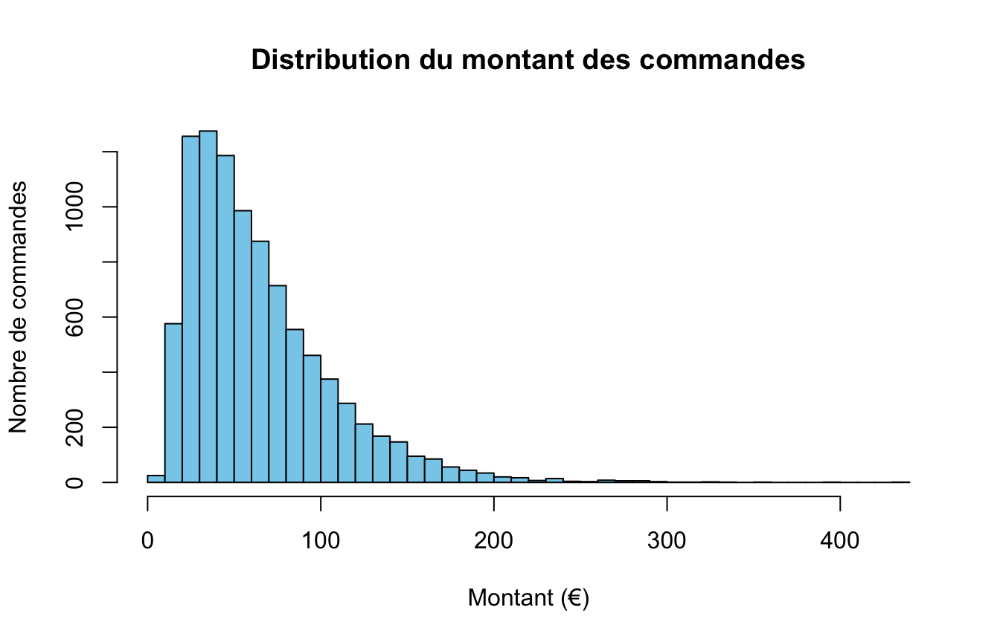
La distribution est asymétrique à droite : beaucoup de petites et moyennes commandes, peu de très grosses.
3.4.2 Variable qualitative
Le tri à plat compte les observations de chaque modalité :
table(clients$canal_acquisition)#>
#> Affiliation Direct Email Moteur de recherche
#> 271 317 250 586
#> Réseaux sociaux
#> 576sort(table(clients$canal_acquisition), decreasing = TRUE)#>
#> Moteur de recherche Réseaux sociaux Direct Affiliation
#> 586 576 317 271
#> Email
#> 250La fonction freq() de questionr ajoute les pourcentages et les valeurs
manquantes :
freq(clients$canal_acquisition, sort = "dec", total = TRUE)#> n % val%
#> Moteur de recherche 586 29.3 29.3
#> Réseaux sociaux 576 28.8 28.8
#> Direct 317 15.8 15.8
#> Affiliation 271 13.6 13.6
#> Email 250 12.5 12.5
#> Total 2000 100.0 100.0freq(d$qualif) # avec des valeurs manquantes (enquête hdv2003)#> n % val%
#> Ouvrier specialise 203 10.2 12.3
#> Ouvrier qualifie 292 14.6 17.7
#> Technicien 86 4.3 5.2
#> Profession intermediaire 160 8.0 9.7
#> Cadre 260 13.0 15.7
#> Employe 594 29.7 35.9
#> Autre 58 2.9 3.5
#> NA 347 17.3 NAtable() n’affiche pas les valeurs manquantes par défaut. Utilisez
table(x, useNA = "ifany") ou freq().
par(mar = c(4, 10, 2, 1)) # marge gauche plus large pour les étiquettes
barplot(sort(table(clients$canal_acquisition)), horiz = TRUE, las = 1,
col = "tomato", main = "Clients par canal d'acquisition")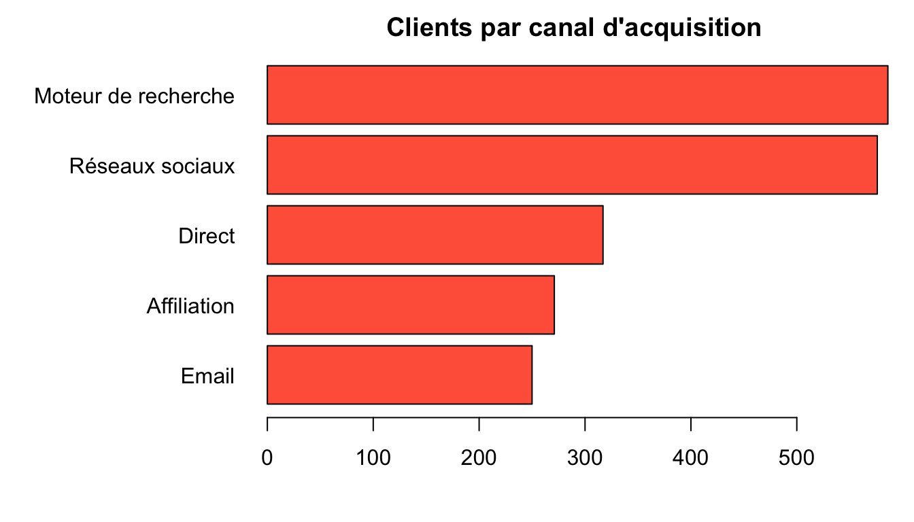
par(mar = c(5, 4, 4, 2) + 0.1) # marges par défautLe diagramme de Cleveland, dotchart(sort(table(x))), est une alternative
plus sobre au diagramme en barres.
3.5 Analyse bivariée
Étudier la relation entre deux variables : sont-elles liées ? Les outils dépendent des types des deux variables. Ils mettent en évidence des associations, pas des relations de cause à effet.
| Variables | Tableau / indicateur | Graphique | Test |
|---|---|---|---|
| 2 qualitatives | tableau croisé, pourcentages ligne ou colonne | mosaicplot(), barres |
\(\chi^2\) (chisq.test()) |
| quantitative × qualitative | moyennes ou médianes par groupe | boîtes à moustaches | t de Student (t.test()), Wilcoxon (wilcox.test()) |
| 2 quantitatives | corrélation (Pearson, Spearman) | nuage de points | test de corrélation (cor.test()), régression |
3.5.1 Deux variables qualitatives : un test A/B
En novembre 2025, la boutique a envoyé une campagne d’emailing à ses abonnés. Chaque abonné a reçu, au hasard, la version A (objet habituel) ou la version B (objet personnalisé avec le prénom). C’est un test A/B : comme l’attribution est aléatoire, une différence de comportement entre les deux groupes peut être attribuée à la version de l’email.
tab_ouv <- table(campagne$version, campagne$ouvert)
tab_ouv#>
#> FALSE TRUE
#> A 370 95
#> B 347 132lprop(tab_ouv) # pourcentages en ligne (questionr)#>
#> FALSE TRUE Total
#> A 79.6 20.4 100.0
#> B 72.4 27.6 100.0
#> All 76.0 24.0 100.0Pourcentages ligne ou colonne ? On calcule les pourcentages dans les modalités de la variable explicative (indépendante). Ici, la version de l’email explique l’ouverture, et elle est en ligne : on lit donc les pourcentages en ligne pour comparer les taux d’ouverture de A et B.
Le taux d’ouverture est plus élevé pour B. Cette différence pourrait-elle être due au hasard du tirage ? Le test du \(\chi^2\) d’indépendance répond à cette question. Son hypothèse nulle est que les deux variables sont indépendantes (ici : que la version n’a aucun effet sur l’ouverture).
chisq.test(tab_ouv)#>
#> Pearson's Chi-squared test with Yates' continuity correction
#>
#> data: tab_ouv
#> X-squared = 6.2, df = 1, p-value = 0.01La p-valeur est inférieure à 0,05 : on rejette l’hypothèse d’indépendance au seuil de 5 %. L’objet personnalisé augmente le taux d’ouverture.
Et les achats ?
tab_achat <- table(campagne$version, campagne$achat)
lprop(tab_achat)#>
#> FALSE TRUE Total
#> A 98.5 1.5 100.0
#> B 97.3 2.7 100.0
#> All 97.9 2.1 100.0chisq.test(tab_achat)#>
#> Pearson's Chi-squared test with Yates' continuity correction
#>
#> data: tab_achat
#> X-squared = 1.1, df = 1, p-value = 0.3Le taux d’achat est plus élevé avec B, mais la différence n’est pas significative. Cela ne prouve pas que B est sans effet sur les ventes : les achats sont rares (quelques dizaines), et le test manque de puissance. Pour conclure, il faudrait un échantillon beaucoup plus grand. « Pas de différence significative » ne veut pas dire « pas de différence ».
Résidus et graphique. Sur un tableau plus grand, les résidus du test indiquent les cases qui s’écartent de l’indépendance (au-delà de 2 en valeur absolue) :
tab_canal <- table(clients$canal_acquisition, clients$newsletter)
lprop(tab_canal)#>
#> Non Oui Total
#> Affiliation 47.6 52.4 100.0
#> Direct 52.7 47.3 100.0
#> Email 47.2 52.8 100.0
#> Moteur de recherche 56.7 43.3 100.0
#> Réseaux sociaux 53.8 46.2 100.0
#> All 52.8 47.2 100.0chisq.test(tab_canal)#>
#> Pearson's Chi-squared test
#>
#> data: tab_canal
#> X-squared = 9.8, df = 4, p-value = 0.04chisq.residuals(tab_canal)#>
#> Non Oui
#> Affiliation -1.18 1.25
#> Direct -0.03 0.03
#> Email -1.22 1.29
#> Moteur de recherche 1.28 -1.36
#> Réseaux sociaux 0.34 -0.36mosaicplot(tab_canal, shade = TRUE, las = 1, main = "Canal d'acquisition et newsletter")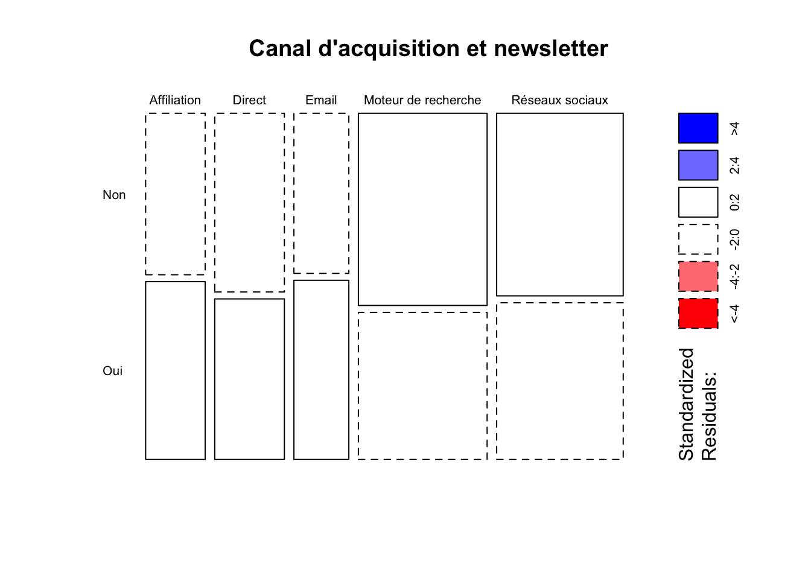
Dans un mosaicplot, la largeur des colonnes représente le poids de chaque
canal et la hauteur des rectangles la répartition des abonnés dans chaque
canal. Avec shade = TRUE, les cases dont le résidu dépasse 2 en valeur
absolue sont colorées (bleu : sur-représentation, rouge :
sous-représentation) ; un contour en pointillés signale un résidu négatif.
Ici, aucune case n’est colorée : la p-valeur globale est juste sous 5 %, mais aucun résidu ne dépasse 1,4 en valeur absolue. La liaison est donc faible : les clients venus par moteur de recherche sont un peu moins souvent abonnés, ceux venus par email ou affiliation un peu plus, sans écart marqué. Avec de grands effectifs, des écarts minimes deviennent significatifs ; il faut toujours regarder l’ampleur des écarts, pas seulement la p-valeur.
3.5.2 Une variable quantitative et une qualitative
Le montant d’une commande dépend-il de l’utilisation d’un code promo ?
boxplot(montant ~ promo, data = commandes,
names = c("Sans promo", "Avec promo"), ylab = "Montant (€)")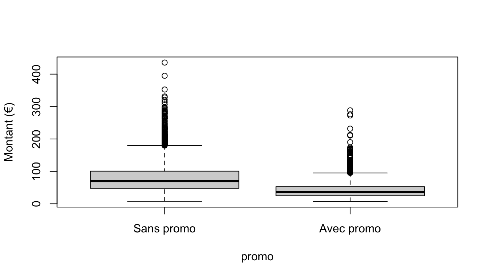
tapply(commandes$montant, commandes$promo, mean)#> FALSE TRUE
#> 79.19 42.86tapply(commandes$montant, commandes$promo, median)#> FALSE TRUE
#> 70.31 35.88La formule montant ~ promo se lit « montant en fonction de promo ». Les
commandes avec promotion sont nettement plus faibles. Le test t de
Student compare les moyennes de deux groupes ; le test de Wilcoxon
(non paramétrique) compare leurs distributions sans hypothèse de normalité :
t.test(montant ~ promo, data = commandes)#>
#> Welch Two Sample t-test
#>
#> data: montant by promo
#> t = 50, df = 9432, p-value <2e-16
#> alternative hypothesis: true difference in means between group FALSE and group TRUE is not equal to 0
#> 95 percent confidence interval:
#> 34.92 37.74
#> sample estimates:
#> mean in group FALSE mean in group TRUE
#> 79.19 42.86wilcox.test(montant ~ promo, data = commandes)#>
#> Wilcoxon rank sum test with continuity correction
#>
#> data: montant by promo
#> W = 1.7e+07, p-value <2e-16
#> alternative hypothesis: true location shift is not equal to 0Interpréter avec prudence. La remise est de 20 %, mais les commandes en promotion sont plus faibles de près de moitié. Une grande partie de l’écart vient de qui utilise les promotions : les clients « chasseurs de promos » ont de toute façon de petits paniers. C’est un facteur de confusion : conclure que « les promotions divisent le panier par deux » serait faux.
De plus, les tests supposent des observations indépendantes ; or plusieurs
commandes viennent du même client. Une analyse rigoureuse raisonnerait au
niveau des clients (voir la section dplyr ci-dessous).
Enfin, le test t suppose la normalité des données dans chaque groupe ;
avec de grands effectifs (plusieurs centaines par groupe), il reste fiable même
si elle n’est pas vérifiée. Le test de normalité de Shapiro-Wilk
(shapiro.test()) rejette presque toujours la normalité sur de grands
échantillons : un histogramme est plus informatif.
3.5.3 Deux variables quantitatives
Le jeu Carseats (package ISLR) décrit les ventes d’un siège auto pour
enfants dans 400 magasins. Ce sont des données simulées par les auteurs du
livre An Introduction to Statistical Learning, mais réalistes : elles sont
classiquement utilisées pour étudier l’effet du prix et de la publicité sur
les ventes. Elles sont réutilisées au chapitre 4.
| Variable | Description |
|---|---|
Sales |
ventes unitaires du magasin, en milliers |
Price |
prix pratiqué par le magasin pour ce siège ($) |
CompPrice |
prix pratiqué par le principal concurrent sur le même emplacement ($) |
Advertising |
budget publicitaire local de l’entreprise, en milliers de dollars |
ShelveLoc |
qualité de l’emplacement en rayon : Bad, Medium, Good |
Income |
revenu moyen de la zone de chalandise, en milliers de dollars |
Population |
population de la zone, en milliers |
Age |
âge moyen de la population locale |
Education |
niveau d’études moyen dans la zone |
Urban |
magasin en zone urbaine : Yes / No |
US |
magasin situé aux États-Unis : Yes / No |
plot(Sales ~ Price, data = Carseats, pch = 16, col = "grey40",
xlab = "Prix ($)", ylab = "Ventes (milliers d'unités)")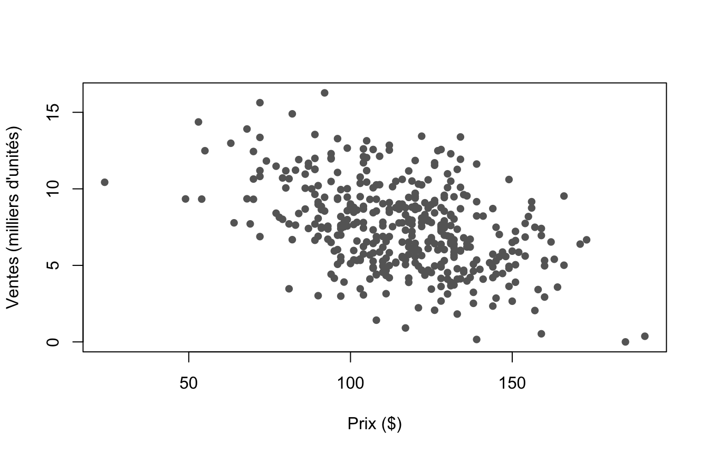
Le coefficient de corrélation de Pearson mesure l’intensité d’une liaison linéaire, entre −1 et 1 ; celui de Spearman, calculé sur les rangs, mesure une liaison monotone et résiste mieux aux valeurs extrêmes.
cor(Carseats$Price, Carseats$Sales)#> [1] -0.445cor(Carseats$Price, Carseats$Sales, method = "spearman")#> [1] -0.4076cor.test(Carseats$Price, Carseats$Sales)#>
#> Pearson's product-moment correlation
#>
#> data: Carseats$Price and Carseats$Sales
#> t = -9.9, df = 398, p-value <2e-16
#> alternative hypothesis: true correlation is not equal to 0
#> 95 percent confidence interval:
#> -0.5203 -0.3627
#> sample estimates:
#> cor
#> -0.445La liaison est négative et modérée : les magasins qui vendent plus cher vendent moins, avec beaucoup de variabilité. La droite de régression résume cette tendance (détaillée au chapitre 4) :
reg <- lm(Sales ~ Price, data = Carseats)
coef(reg)#> (Intercept) Price
#> 13.64192 -0.05307plot(Sales ~ Price, data = Carseats, pch = 16, col = "grey60")
abline(reg, col = "red", lwd = 2)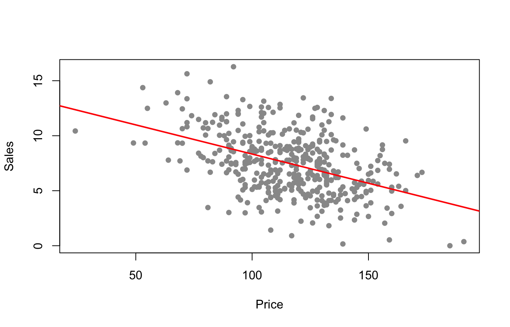
Chaque dollar supplémentaire est associé, en moyenne, à 53 sièges vendus en moins par magasin.
Une corrélation proche de 0 signifie l’absence de liaison linéaire, pas l’absence de liaison : une relation en U a une corrélation nulle. Et une forte corrélation n’implique pas une causalité. Regardez toujours le nuage de points.
3.6 Manipuler des données avec dplyr
dplyr propose un ensemble cohérent de fonctions (« verbes ») qui prennent
toutes un data frame en premier argument et renvoient un data frame.
Les noms de colonnes s’écrivent directement, sans guillemets ni $.
| Verbe | Rôle | Équivalent base R |
|---|---|---|
filter() |
garder des lignes selon une condition | df[cond, ], subset() |
slice() |
garder des lignes selon leur position | df[1:5, ] |
arrange() |
trier les lignes | df[order(...), ] |
select(), rename(), relocate() |
choisir, renommer, réordonner des colonnes | df[, c(...)] |
mutate() |
créer ou modifier des colonnes | df$x <- ... |
summarise() |
résumer en une ligne | aggregate() |
group_by() |
définir des groupes | argument by d’aggregate() |
3.6.1 Filtrer les lignes
filter(commandes, montant > 300)#> # A tibble: 8 × 8
#> commande_id client_id date categorie nb_articles promo montant
#> <chr> <chr> <date> <chr> <dbl> <lgl> <dbl>
#> 1 K01194 C0998 2025-02-27 Maison 2 FALSE 331.
#> 2 K01602 C0155 2025-03-18 Maison 1 FALSE 353.
#> 3 K02251 C1415 2025-04-19 Maison 2 FALSE 321.
#> 4 K03091 C1338 2025-05-25 Mode 2 FALSE 307.
#> 5 K03481 C1762 2025-06-10 High-tech 2 FALSE 314.
#> 6 K05848 C1418 2025-09-27 High-tech 1 FALSE 395.
#> 7 K07149 C0946 2025-11-10 Maison 1 FALSE 436.
#> 8 K09359 C0247 2025-12-29 Mode 2 FALSE 328.
#> # ℹ 1 more variable: montant_ht <dbl>filter(commandes, categorie %in% c("Mode", "Beauté"), promo) # la virgule signifie ET#> # A tibble: 2,229 × 8
#> commande_id client_id date categorie nb_articles promo montant
#> <chr> <chr> <date> <chr> <dbl> <lgl> <dbl>
#> 1 K00001 C0103 2025-01-01 Mode 3 TRUE 22.1
#> 2 K00007 C0648 2025-01-01 Beauté 3 TRUE 43.8
#> 3 K00020 C1855 2025-01-01 Beauté 1 TRUE 38.4
#> 4 K00023 C0222 2025-01-02 Mode 3 TRUE 20
#> 5 K00027 C0622 2025-01-02 Mode 3 TRUE 36.0
#> 6 K00043 C1837 2025-01-02 Beauté 3 TRUE 48.6
#> 7 K00047 C0298 2025-01-03 Mode 2 TRUE 25.7
#> 8 K00050 C0517 2025-01-03 Mode 5 TRUE 17.0
#> 9 K00057 C0807 2025-01-03 Mode 6 TRUE 40.9
#> 10 K00074 C0686 2025-01-04 Beauté 3 TRUE 39.2
#> # ℹ 2,219 more rows
#> # ℹ 1 more variable: montant_ht <dbl>filter(clients, is.na(age)) # âge non renseigné#> # A tibble: 60 × 6
#> client_id age region canal_acquisition date_inscription newsletter
#> <chr> <dbl> <chr> <chr> <date> <chr>
#> 1 C0016 NA Autres régions Moteur de recher… 2021-07-15 Non
#> 2 C0037 NA Autres régions Moteur de recher… 2024-07-15 Non
#> 3 C0130 NA Île-de-France Email 2024-10-23 Oui
#> 4 C0156 NA Île-de-France Direct 2022-09-08 Oui
#> 5 C0196 NA Île-de-France Affiliation 2023-10-24 Oui
#> 6 C0387 NA Grand Est Affiliation 2021-12-13 Oui
#> 7 C0404 NA Autres régions Direct 2023-04-28 Non
#> 8 C0416 NA Auvergne-Rhône… Moteur de recher… 2024-07-27 Non
#> 9 C0419 NA Autres régions Réseaux sociaux 2025-07-13 Non
#> 10 C0423 NA Autres régions Direct 2021-09-01 Oui
#> # ℹ 50 more rowsslice() et ses variantes sélectionnent des lignes par position :
slice(commandes, 1:3)#> # A tibble: 3 × 8
#> commande_id client_id date categorie nb_articles promo montant
#> <chr> <chr> <date> <chr> <dbl> <lgl> <dbl>
#> 1 K00001 C0103 2025-01-01 Mode 3 TRUE 22.1
#> 2 K00002 C0187 2025-01-01 Maison 1 FALSE 55.0
#> 3 K00003 C0259 2025-01-01 High-tech 1 FALSE 129.
#> # ℹ 1 more variable: montant_ht <dbl>slice_max(commandes, montant, n = 3) # les 3 plus grosses commandes#> # A tibble: 3 × 8
#> commande_id client_id date categorie nb_articles promo montant
#> <chr> <chr> <date> <chr> <dbl> <lgl> <dbl>
#> 1 K07149 C0946 2025-11-10 Maison 1 FALSE 436.
#> 2 K05848 C1418 2025-09-27 High-tech 1 FALSE 395.
#> 3 K01602 C0155 2025-03-18 Maison 1 FALSE 353.
#> # ℹ 1 more variable: montant_ht <dbl>slice_sample(clients, n = 3) # 3 clients au hasard (remplace sample_n())#> # A tibble: 3 × 6
#> client_id age region canal_acquisition date_inscription newsletter
#> <chr> <dbl> <chr> <chr> <date> <chr>
#> 1 C1865 18 Île-de-France Réseaux sociaux 2025-10-18 Oui
#> 2 C1615 29 Nouvelle-Aquita… Réseaux sociaux 2023-08-29 Oui
#> 3 C1749 46 Île-de-France Direct 2021-09-20 Ouifilter() élimine les lignes pour lesquelles la condition vaut NA. Pour
garder ou repérer les valeurs manquantes, utilisez is.na() explicitement.
3.6.2 Trier
arrange(commandes, desc(montant))#> # A tibble: 9,508 × 8
#> commande_id client_id date categorie nb_articles promo montant
#> <chr> <chr> <date> <chr> <dbl> <lgl> <dbl>
#> 1 K07149 C0946 2025-11-10 Maison 1 FALSE 436.
#> 2 K05848 C1418 2025-09-27 High-tech 1 FALSE 395.
#> 3 K01602 C0155 2025-03-18 Maison 1 FALSE 353.
#> 4 K01194 C0998 2025-02-27 Maison 2 FALSE 331.
#> 5 K09359 C0247 2025-12-29 Mode 2 FALSE 328.
#> 6 K02251 C1415 2025-04-19 Maison 2 FALSE 321.
#> 7 K03481 C1762 2025-06-10 High-tech 2 FALSE 314.
#> 8 K03091 C1338 2025-05-25 Mode 2 FALSE 307.
#> 9 K06873 C1428 2025-11-03 Sport 5 FALSE 298.
#> 10 K04004 C0332 2025-07-02 Maison 1 FALSE 296.
#> # ℹ 9,498 more rows
#> # ℹ 1 more variable: montant_ht <dbl>arrange(clients, region, desc(date_inscription))#> # A tibble: 2,000 × 6
#> client_id age region canal_acquisition date_inscription newsletter
#> <chr> <dbl> <chr> <chr> <date> <chr>
#> 1 C0258 25 Autres régions Réseaux sociaux 2025-12-24 Non
#> 2 C1029 33 Autres régions Affiliation 2025-12-22 Non
#> 3 C1980 22 Autres régions Moteur de recherc… 2025-12-21 Oui
#> 4 C1876 25 Autres régions Réseaux sociaux 2025-12-10 Non
#> 5 C0479 42 Autres régions Réseaux sociaux 2025-12-09 Oui
#> 6 C1355 47 Autres régions Réseaux sociaux 2025-12-04 Oui
#> 7 C1781 39 Autres régions Moteur de recherc… 2025-11-15 Oui
#> 8 C1149 23 Autres régions Réseaux sociaux 2025-11-11 Non
#> 9 C0772 18 Autres régions Réseaux sociaux 2025-11-07 Non
#> 10 C0178 36 Autres régions Réseaux sociaux 2025-11-02 Oui
#> # ℹ 1,990 more rows3.6.3 Sélectionner, renommer et réordonner des colonnes
select(commandes, client_id, date, montant)#> # A tibble: 9,508 × 3
#> client_id date montant
#> <chr> <date> <dbl>
#> 1 C0103 2025-01-01 22.1
#> 2 C0187 2025-01-01 55.0
#> 3 C0259 2025-01-01 129.
#> 4 C0282 2025-01-01 178.
#> 5 C0354 2025-01-01 68.4
#> 6 C0640 2025-01-01 52
#> 7 C0648 2025-01-01 43.8
#> 8 C0650 2025-01-01 73.4
#> 9 C0798 2025-01-01 19.4
#> 10 C0962 2025-01-01 90.5
#> # ℹ 9,498 more rowsselect(clients, -age, -region) # tout sauf...#> # A tibble: 2,000 × 4
#> client_id canal_acquisition date_inscription newsletter
#> <chr> <chr> <date> <chr>
#> 1 C0001 Réseaux sociaux 2023-10-25 Oui
#> 2 C0002 Email 2022-01-29 Oui
#> 3 C0003 Direct 2023-05-04 Non
#> 4 C0004 Réseaux sociaux 2023-06-12 Non
#> 5 C0005 Réseaux sociaux 2023-12-27 Oui
#> 6 C0006 Moteur de recherche 2022-11-30 Non
#> 7 C0007 Email 2022-02-25 Oui
#> 8 C0008 Affiliation 2025-07-30 Non
#> 9 C0009 Moteur de recherche 2022-06-30 Non
#> 10 C0010 Affiliation 2024-05-07 Non
#> # ℹ 1,990 more rowsselect(commandes, starts_with("montant"))#> # A tibble: 9,508 × 2
#> montant montant_ht
#> <dbl> <dbl>
#> 1 22.1 18.4
#> 2 55.0 45.8
#> 3 129. 108.
#> 4 178. 148.
#> 5 68.4 57.0
#> 6 52 43.3
#> 7 43.8 36.5
#> 8 73.4 61.2
#> 9 19.4 16.1
#> 10 90.5 75.4
#> # ℹ 9,498 more rowsselect(commandes, where(is.numeric))#> # A tibble: 9,508 × 3
#> nb_articles montant montant_ht
#> <dbl> <dbl> <dbl>
#> 1 3 22.1 18.4
#> 2 1 55.0 45.8
#> 3 1 129. 108.
#> 4 3 178. 148.
#> 5 2 68.4 57.0
#> 6 1 52 43.3
#> 7 3 43.8 36.5
#> 8 1 73.4 61.2
#> 9 4 19.4 16.1
#> 10 2 90.5 75.4
#> # ℹ 9,498 more rowsrename(clients, canal = canal_acquisition) # nouveau_nom = ancien_nom#> # A tibble: 2,000 × 6
#> client_id age region canal date_inscription newsletter
#> <chr> <dbl> <chr> <chr> <date> <chr>
#> 1 C0001 62 Île-de-France Réseaux socia… 2023-10-25 Oui
#> 2 C0002 39 Occitanie Email 2022-01-29 Oui
#> 3 C0003 53 Hauts-de-France Direct 2023-05-04 Non
#> 4 C0004 38 Hauts-de-France Réseaux socia… 2023-06-12 Non
#> 5 C0005 41 Grand Est Réseaux socia… 2023-12-27 Oui
#> 6 C0006 35 Autres régions Moteur de rec… 2022-11-30 Non
#> 7 C0007 37 Nouvelle-Aquitaine Email 2022-02-25 Oui
#> 8 C0008 29 Autres régions Affiliation 2025-07-30 Non
#> 9 C0009 36 Île-de-France Moteur de rec… 2022-06-30 Non
#> 10 C0010 35 Île-de-France Affiliation 2024-05-07 Non
#> # ℹ 1,990 more rowsrelocate(commandes, montant, .after = client_id)#> # A tibble: 9,508 × 8
#> commande_id client_id montant date categorie nb_articles promo
#> <chr> <chr> <dbl> <date> <chr> <dbl> <lgl>
#> 1 K00001 C0103 22.1 2025-01-01 Mode 3 TRUE
#> 2 K00002 C0187 55.0 2025-01-01 Maison 1 FALSE
#> 3 K00003 C0259 129. 2025-01-01 High-tech 1 FALSE
#> 4 K00004 C0282 178. 2025-01-01 High-tech 3 FALSE
#> 5 K00005 C0354 68.4 2025-01-01 Beauté 2 FALSE
#> 6 K00006 C0640 52 2025-01-01 High-tech 1 FALSE
#> 7 K00007 C0648 43.8 2025-01-01 Beauté 3 TRUE
#> 8 K00008 C0650 73.4 2025-01-01 Mode 1 FALSE
#> 9 K00009 C0798 19.4 2025-01-01 High-tech 4 TRUE
#> 10 K00010 C0962 90.5 2025-01-01 High-tech 2 FALSE
#> # ℹ 9,498 more rows
#> # ℹ 1 more variable: montant_ht <dbl>Fonctions d’aide à la sélection : starts_with(), ends_with(),
contains(), where(), all_of() / any_of() (noms donnés dans un vecteur
de texte), everything().
3.6.4 Créer des variables
commandes <- mutate(commandes,
mois = month(date), # package lubridate (tidyverse)
jour_semaine = wday(date, label = TRUE, week_start = 1),
prix_moyen_article = montant / nb_articles)
select(commandes, date, mois, jour_semaine, prix_moyen_article)#> # A tibble: 9,508 × 4
#> date mois jour_semaine prix_moyen_article
#> <date> <dbl> <ord> <dbl>
#> 1 2025-01-01 1 Wed 7.36
#> 2 2025-01-01 1 Wed 55.0
#> 3 2025-01-01 1 Wed 129.
#> 4 2025-01-01 1 Wed 59.3
#> 5 2025-01-01 1 Wed 34.2
#> 6 2025-01-01 1 Wed 52
#> 7 2025-01-01 1 Wed 14.6
#> 8 2025-01-01 1 Wed 73.4
#> 9 2025-01-01 1 Wed 4.84
#> 10 2025-01-01 1 Wed 45.2
#> # ℹ 9,498 more rowscase_when() crée une variable selon plusieurs conditions, testées dans
l’ordre :
commandes <- mutate(commandes,
taille_panier = case_when(
montant < 30 ~ "Petit",
montant < 100 ~ "Moyen",
.default = "Grand"
))
count(commandes, taille_panier)#> # A tibble: 3 × 2
#> taille_panier n
#> <chr> <int>
#> 1 Grand 1599
#> 2 Moyen 6054
#> 3 Petit 18553.6.5 Enchaîner les opérations : le pipe
Le pipe |> (natif depuis R 4.1) ou %>% (package magrittr) passe le résultat de gauche comme premier argument de la fonction de droite : x |> f(y) équivaut à f(x, y). On lit la chaîne de haut en bas : « prendre les commandes, puis filtrer, puis sélectionner, puis trier ».
# Sans pipe : se lit de l'intérieur vers l'extérieur
arrange(select(filter(commandes, categorie == "High-tech"), client_id, montant), desc(montant))#> # A tibble: 2,112 × 2
#> client_id montant
#> <chr> <dbl>
#> 1 C1418 395.
#> 2 C1762 314.
#> 3 C0336 283.
#> 4 C0961 272.
#> 5 C1105 270.
#> 6 C0696 269.
#> 7 C1135 268.
#> 8 C1247 264.
#> 9 C1860 264.
#> 10 C1330 258.
#> # ℹ 2,102 more rows# Avec pipe : se lit de haut en bas
commandes |>
filter(categorie == "High-tech") |>
select(client_id, montant) |>
arrange(desc(montant))#> # A tibble: 2,112 × 2
#> client_id montant
#> <chr> <dbl>
#> 1 C1418 395.
#> 2 C1762 314.
#> 3 C0336 283.
#> 4 C0961 272.
#> 5 C1105 270.
#> 6 C0696 269.
#> 7 C1135 268.
#> 8 C1247 264.
#> 9 C1860 264.
#> 10 C1330 258.
#> # ℹ 2,102 more rows3.6.6 Résumer par groupe
summarise() réduit une table à une ligne de statistiques ; combinée à
group_by(), elle les calcule pour chaque groupe (split-apply-combine).
commandes |>
summarise(chiffre_affaires = sum(montant),
nb_commandes = n(),
panier_moyen = mean(montant),
nb_clients = n_distinct(client_id))#> # A tibble: 1 × 4
#> chiffre_affaires nb_commandes panier_moyen nb_clients
#> <dbl> <int> <dbl> <int>
#> 1 613761. 9508 64.6 1741commandes |>
group_by(categorie) |>
summarise(chiffre_affaires = sum(montant),
panier_moyen = mean(montant),
part_promo = mean(promo)) |>
arrange(desc(chiffre_affaires))#> # A tibble: 5 × 4
#> categorie chiffre_affaires panier_moyen part_promo
#> <chr> <dbl> <dbl> <dbl>
#> 1 High-tech 165067. 78.2 0.256
#> 2 Maison 153180. 75.8 0.307
#> 3 Mode 135095. 54.2 0.514
#> 4 Beauté 91593. 51.6 0.534
#> 5 Sport 68827. 62.2 0.399count() est un raccourci pour group_by() + summarise(n = n()) :
commandes |> count(mois)#> # A tibble: 12 × 2
#> mois n
#> <dbl> <int>
#> 1 1 716
#> 2 2 504
#> 3 3 638
#> 4 4 631
#> 5 5 748
#> 6 6 744
#> 7 7 630
#> 8 8 592
#> 9 9 727
#> 10 10 845
#> 11 11 1221
#> 12 12 1512group_by() agit aussi sur mutate(), filter() et slice_*(). Pour garder
la plus grosse commande de chaque catégorie, ou comparer chaque commande à
la moyenne de son client :
commandes |>
group_by(categorie) |>
slice_max(montant, n = 1) |>
ungroup() |>
select(categorie, client_id, montant)#> # A tibble: 5 × 3
#> categorie client_id montant
#> <chr> <chr> <dbl>
#> 1 Beauté C0582 288.
#> 2 High-tech C1418 395.
#> 3 Maison C0946 436.
#> 4 Mode C0247 328.
#> 5 Sport C1428 298.commandes |>
group_by(client_id) |>
mutate(ecart_a_sa_moyenne = montant - mean(montant)) |>
ungroup() |>
select(client_id, montant, ecart_a_sa_moyenne)#> # A tibble: 9,508 × 3
#> client_id montant ecart_a_sa_moyenne
#> <chr> <dbl> <dbl>
#> 1 C0103 22.1 -1.60
#> 2 C0187 55.0 -16.4
#> 3 C0259 129. 29.3
#> 4 C0282 178. 69.4
#> 5 C0354 68.4 0
#> 6 C0640 52 13.7
#> 7 C0648 43.8 -2.83
#> 8 C0650 73.4 23.2
#> 9 C0798 19.4 -19.6
#> 10 C0962 90.5 -18.8
#> # ℹ 9,498 more rows- Après un
group_by(), la table reste groupée : terminez parungroup(). arrange()ignore les groupes, sauf avec.by_group = TRUE.- Dans
summarise()etmutate(), une expression voit les colonnes créées juste avant. Écriresummarise(montant = sum(montant), moyen = mean(montant))calcule la moyenne… de la somme. Donnez un nouveau nom aux résultats.
3.6.7 Exemple marketing : les indicateurs RFM
L’analyse RFM décrit chaque client par trois indicateurs :
- Récence : nombre de jours depuis sa dernière commande ;
- Fréquence : nombre de commandes sur la période ;
- Montant : chiffre d’affaires total.
Un client récent, fréquent et dépensier est précieux ; un client ancien et peu actif est « en train de partir ». On calcule ces indicateurs à partir de la table des commandes, au 1er janvier 2026 :
date_reference <- as.Date("2026-01-01")
rfm <- commandes |>
group_by(client_id) |>
summarise(recence = as.numeric(date_reference - max(date)),
frequence = n(),
montant_total = sum(montant)) |>
ungroup()
rfm#> # A tibble: 1,741 × 4
#> client_id recence frequence montant_total
#> <chr> <dbl> <int> <dbl>
#> 1 C0001 7 8 808.
#> 2 C0002 16 8 227.
#> 3 C0003 78 2 146.
#> 4 C0004 38 5 203.
#> 5 C0005 3 7 298.
#> 6 C0006 276 1 114.
#> 7 C0007 15 14 410.
#> 8 C0008 1 3 113.
#> 9 C0009 44 1 67.4
#> 10 C0010 14 11 322.
#> # ℹ 1,731 more rowssummary(rfm[, -1])#> recence frequence montant_total
#> Min. : 1.0 Min. : 1.00 Min. : 16.1
#> 1st Qu.: 12.0 1st Qu.: 2.00 1st Qu.: 104.2
#> Median : 30.0 Median : 4.00 Median : 191.4
#> Mean : 68.8 Mean : 5.46 Mean : 352.5
#> 3rd Qu.: 86.0 3rd Qu.: 8.00 3rd Qu.: 355.2
#> Max. :365.0 Max. :19.00 Max. :1862.1On peut ensuite répartir les clients en groupes de valeur, par exemple en
quartiles de montant avec ntile() :
rfm |>
mutate(quartile_montant = ntile(montant_total, 4)) |>
group_by(quartile_montant) |>
summarise(nb_clients = n(),
ca_total = sum(montant_total)) |>
mutate(part_ca = round(100 * ca_total / sum(ca_total), 1))#> # A tibble: 4 × 4
#> quartile_montant nb_clients ca_total part_ca
#> <int> <int> <dbl> <dbl>
#> 1 1 436 28000. 4.6
#> 2 2 435 63147. 10.3
#> 3 3 435 111592. 18.2
#> 4 4 435 411023. 67Le quart des clients qui dépensent le plus réalise environ les deux tiers du chiffre d’affaires : une illustration de la loi de Pareto, très fréquente en commerce.
3.6.8 Décaler des valeurs : lag() et lead()
lag() renvoie la valeur précédente, lead() la valeur suivante :
lag(c(5, 3, 8))#> [1] NA 5 3lead(c(5, 3, 8))#> [1] 3 8 NACombinées à group_by() et arrange(), elles calculent par exemple le délai
entre deux commandes successives d’un même client :
delais <- commandes |>
arrange(client_id, date) |>
group_by(client_id) |>
mutate(jours_depuis_precedente = as.numeric(date - lag(date))) |>
ungroup()
delais |> select(client_id, date, jours_depuis_precedente) |> head(6)#> # A tibble: 6 × 3
#> client_id date jours_depuis_precedente
#> <chr> <date> <dbl>
#> 1 C0001 2025-04-14 NA
#> 2 C0001 2025-05-08 24
#> 3 C0001 2025-06-22 45
#> 4 C0001 2025-09-23 93
#> 5 C0001 2025-09-25 2
#> 6 C0001 2025-10-08 13median(delais$jours_depuis_precedente, na.rm = TRUE)#> [1] 27La première commande de chaque client n’a pas de précédente : NA.
3.6.9 Concaténer des tables
bind_rows() empile des tables (mêmes colonnes) ; bind_cols() les
juxtapose par position, ce qui suppose des lignes dans le même ordre.
commandes_s1 <- filter(commandes, mois <= 6)
commandes_s2 <- filter(commandes, mois > 6)
bind_rows(S1 = commandes_s1, S2 = commandes_s2, .id = "semestre") |>
count(semestre)#> # A tibble: 2 × 2
#> semestre n
#> <chr> <int>
#> 1 S1 3981
#> 2 S2 55273.6.10 Joindre des tables
Les informations sont souvent réparties dans plusieurs tables reliées par une
clé : client_id relie commandes et clients, categorie relie commandes
et catégories.
| Jointure | Lignes conservées |
|---|---|
left_join(x, y) |
toutes celles de x (la plus utilisée) |
right_join(x, y) |
toutes celles de y |
inner_join(x, y) |
celles présentes dans x et y |
full_join(x, y) |
celles présentes dans x ou y |
semi_join(x, y) |
celles de x qui ont une correspondance dans y (sans ajouter de colonnes) |
anti_join(x, y) |
celles de x sans correspondance dans y |
Ajouter des informations : la marge de chaque catégorie, puis la marge réalisée par catégorie.
commandes |>
left_join(categories, by = "categorie") |>
mutate(marge = montant / 1.2 * taux_marge) |>
group_by(categorie, univers) |>
summarise(ca = sum(montant), marge = sum(marge), .groups = "drop") |>
arrange(desc(marge))#> # A tibble: 5 × 4
#> categorie univers ca marge
#> <chr> <chr> <dbl> <dbl>
#> 1 Mode Personne 135095. 61919.
#> 2 Maison Habitat 153180. 51060.
#> 3 Beauté Personne 91593. 45797.
#> 4 High-tech Technologie 165067. 24760.
#> 5 Sport Loisirs 68827. 20074.La catégorie High-tech fait un gros chiffre d’affaires mais une marge faible.
Compter les commandes par catégorie, y compris celles qui n’en ont aucune :
categories |>
left_join(count(commandes, categorie), by = "categorie")#> # A tibble: 6 × 4
#> categorie taux_marge univers n
#> <chr> <dbl> <chr> <int>
#> 1 Mode 0.55 Personne 2493
#> 2 Maison 0.4 Habitat 2020
#> 3 Beauté 0.6 Personne 1776
#> 4 High-tech 0.18 Technologie 2112
#> 5 Sport 0.35 Loisirs 1107
#> 6 Jardin 0.45 Habitat NA« Jardin » n’a aucune commande : n vaut NA (on peut le remplacer par 0
avec replace_na()). Avec inner_join(), la ligne aurait disparu.
Trouver les clients inactifs (inscrits mais sans commande en 2025), par exemple pour une campagne de réactivation :
inactifs <- clients |> anti_join(commandes, by = "client_id")
nrow(inactifs)#> [1] 259freq(inactifs$canal_acquisition, sort = "dec")#> n % val%
#> Moteur de recherche 96 37.1 37.1
#> Réseaux sociaux 73 28.2 28.2
#> Direct 45 17.4 17.4
#> Email 23 8.9 8.9
#> Affiliation 22 8.5 8.5Clés de noms différents : by = c("nom_dans_x" = "nom_dans_y"), par
exemple avec nycflights13 :
flights |>
count(dest) |>
left_join(airports, by = c("dest" = "faa")) |>
select(dest, name, n) |>
arrange(desc(n)) |>
head(5)#> # A tibble: 5 × 3
#> dest name n
#> <chr> <chr> <int>
#> 1 ORD Chicago Ohare Intl 17283
#> 2 ATL Hartsfield Jackson Atlanta Intl 17215
#> 3 LAX Los Angeles Intl 16174
#> 4 BOS General Edward Lawrence Logan Intl 15508
#> 5 MCO Orlando Intl 14082Vérifiez toujours le nombre de lignes avant et après une jointure. Si la clé
n’est pas unique dans y, une left_join() duplique des lignes de x
(et dplyr affiche un avertissement).
3.7 Données rangées (tidy data)
Un jeu de données est rangé (tidy) lorsque :
- chaque variable est une colonne ;
- chaque observation est une ligne ;
- chaque valeur est dans une cellule.
dplyr et ggplot2 sont conçus pour ce format. Les tableaux de bord et les
exports d’outils marketing sont pourtant souvent au format large : une
colonne par mois, par exemple.
ca_large <- commandes |>
group_by(categorie, mois) |>
summarise(ca = round(sum(montant)), .groups = "drop") |>
pivot_wider(names_from = mois, values_from = ca, names_prefix = "m")
ca_large#> # A tibble: 5 × 13
#> categorie m1 m2 m3 m4 m5 m6 m7 m8 m9 m10 m11
#> <chr> <dbl> <dbl> <dbl> <dbl> <dbl> <dbl> <dbl> <dbl> <dbl> <dbl> <dbl>
#> 1 Beauté 7049 5492 6466 6041 5632 7593 6436 6835 6262 8553 11266
#> 2 High-tech 12602 9774 11329 9884 12537 13962 11700 8473 11682 13780 21121
#> 3 Maison 12822 8858 10069 10336 11386 12401 9988 9358 12927 12459 17884
#> 4 Mode 9002 6679 8030 9199 12018 8977 9579 7394 11167 12325 18672
#> 5 Sport 4715 3934 4922 4058 5507 5660 4132 4657 4756 6187 10066
#> # ℹ 1 more variable: m12 <dbl>Ce format est lisible pour un humain, mais « mois » n’y est pas une variable.
pivot_longer() revient au format long :
ca_long <- ca_large |>
pivot_longer(cols = starts_with("m"), names_to = "mois",
names_prefix = "m", values_to = "ca") |>
mutate(mois = as.integer(mois))
ca_long#> # A tibble: 60 × 3
#> categorie mois ca
#> <chr> <int> <dbl>
#> 1 Beauté 1 7049
#> 2 Beauté 2 5492
#> 3 Beauté 3 6466
#> 4 Beauté 4 6041
#> 5 Beauté 5 5632
#> 6 Beauté 6 7593
#> 7 Beauté 7 6436
#> 8 Beauté 8 6835
#> 9 Beauté 9 6262
#> 10 Beauté 10 8553
#> # ℹ 50 more rowspivot_longer() et pivot_wider() remplacent melt() / dcast() (package
reshape2) et stack() / unstack() (R de base), que l’on trouve dans du code
plus ancien. Autres fonctions utiles de tidyr :
separate_wider_delim() (découper une colonne), unite() (coller des
colonnes), drop_na(), replace_na().
3.8 Valeurs manquantes
colSums(is.na(clients))#> client_id age region canal_acquisition
#> 0 60 0 0
#> date_inscription newsletter
#> 0 0clients |> summarise(across(everything(), \(x) sum(is.na(x))))#> # A tibble: 1 × 6
#> client_id age region canal_acquisition date_inscription newsletter
#> <int> <int> <int> <int> <int> <int>
#> 1 0 60 0 0 0 0mean(clients$age) # NA#> [1] NAmean(clients$age, na.rm = TRUE)#> [1] 36.93Que faire des valeurs manquantes ? Il n’y a pas de réponse unique : les supprimer, les remplacer (par la médiane, une valeur prédite, \(\ldots\)), ou les garder comme une modalité à part (« âge non renseigné »). Le choix dépend du mécanisme qui les a produites : si les clients les plus jeunes renseignent moins souvent leur âge, supprimer ces lignes biaise l’analyse. Documentez votre choix et, dans l’esprit du cadre PCS, vérifiez que vos conclusions n’en dépendent pas trop.
3.9 Générer des données
3.9.1 Séquences régulières
1:10#> [1] 1 2 3 4 5 6 7 8 9 10seq(0, 1, by = 0.25)#> [1] 0.00 0.25 0.50 0.75 1.00seq(1, 3, length.out = 5)#> [1] 1.0 1.5 2.0 2.5 3.0seq(as.Date("2026-01-01"), by = "month", length.out = 4)#> [1] "2026-01-01" "2026-02-01" "2026-03-01" "2026-04-01"rep(c("A", "B"), times = 3)#> [1] "A" "B" "A" "B" "A" "B"rep(c("A", "B"), each = 2)#> [1] "A" "A" "B" "B"expand.grid(version = c("A", "B"), segment = c("nouveaux", "fidèles"))#> version segment
#> 1 A nouveaux
#> 2 B nouveaux
#> 3 A fidèles
#> 4 B fidèles3.9.2 Tirages aléatoires
Pour chaque loi de probabilité, R fournit quatre fonctions, dont le nom commence par :
| Préfixe | Rôle | Exemple (loi normale) |
|---|---|---|
r |
tirage aléatoire | rnorm(10, mean = 0, sd = 1) |
d |
densité (ou probabilité ponctuelle) | dnorm(0) |
p |
fonction de répartition \(P(X \le q)\) | pnorm(1.96) |
q |
quantile (inverse de p) |
qnorm(0.975) |
Lois courantes : norm, unif, binom, pois, exp, lnorm, t,
chisq, f.
set.seed(42) # rend les tirages reproductibles
rbinom(5, size = 1000, prob = 0.03) # acheteurs parmi 1 000 visiteurs, conversion de 3 %#> [1] 38 30 36 27 46rpois(5, lambda = 4) # nombre de commandes par client#> [1] 9 7 1 4 3rlnorm(3, meanlog = log(50), sdlog = 0.5) # montants (loi log-normale, asymétrique)#> [1] 96.50 81.54 77.70sample(c("A", "B"), 10, replace = TRUE) # attribution aléatoire d'un test A/B#> [1] "B" "A" "B" "A" "B" "B" "B" "A" "A" "B"Simuler des données permet de tester une méthode sur des données dont on connaît la vérité.Par exemple, on a utilisé ces fonctions pour créer la boutique en ligne : - nombre de commandes selon une loi de Poisson, - montants selon une loi log-normale, - ouvertures d’emails selon une loi de Bernoulli. On a simulé aussi des segments de clients « cachés » que l’on cherchera à retrouver au chapitre 6.
Exemple : quelle taille d’échantillon pour un test A/B ? Si le taux d’achat réel est de 1,5 % avec A et de 2,5 % avec B, combien de fois sur 100 un test avec 500 abonnés par version détecte-t-il la différence ?
set.seed(1)
detecte <- replicate(1000, {
achats_a <- rbinom(1, 500, 0.015)
achats_b <- rbinom(1, 500, 0.025)
prop.test(c(achats_a, achats_b), c(500, 500))$p.value < 0.05
})
mean(detecte)#> [1] 0.14Le test ne détecte la différence que dans une minorité des cas : c’est ce qu’on appelle un manque de puissance, et cela explique le résultat non significatif sur les achats de la campagne.
3.10 Résumé
- Lire :
read_csv(),read_csv2()pour les CSV français,read_excel(); écrire :write_csv(),saveRDS(); chemins relatifs. - Structure :
dim(),names(),glimpse(),View(); variables avec$. - Univarié : moyenne et médiane, écart-type, quantiles, histogramme ;
table(),freq(), diagramme en barres. - Bivarié : tableau croisé + pourcentages sur la variable explicative + \(\chi^2\) ; boîtes à moustaches + t / Wilcoxon ; nuage de points + corrélation. Significatif \(\neq\) important ; non significatif \(\neq\) absence d’effet ; association \(\neq\) causalité.
dplyr:filter,arrange,select,mutate,summarise,group_by,count,lag,*_join, enchaînés avec|>ou%>%.- Tidy data : une variable par colonne, une observation par ligne ;
pivot_longer()/pivot_wider(). - Valeurs manquantes :
is.na(),na.rm = TRUE; leur traitement est un choix à documenter. - Générer :
seq(),rep(),r*/d*/p*/q*,sample(); toujoursset.seed().
3.11 Exercices
Exercice 3.1 — Analyse univariée (hdv2003). Le jeu hdv2003 (package
questionr) est un extrait de l’enquête Histoire de vie de l’INSEE (2003) :
2 000 personnes et 20 variables (âge, sexe, niveau d’études, catégorie
socio-professionnelle, loisirs, heures passées devant la télévision…).
- Créer un nouveau script qui charge l’extension
questionr, charge le jeu de donnéeshdv2003, le copie dans un objetdf, puis affiche les dimensions et la liste des variables dedf. - On étudie le temps passé quotidiennement devant la télévision (variable
heures.tv). Afficher la valeur minimale, la valeur maximale, la moyenne, la médiane et l’écart-type, puis représenter la distribution par un histogramme en 10 classes. - On s’intéresse à l’importance accordée au travail (variable
trav.imp). Faire le tri à plat des effectifs avectable(), puis un tri à plat avec effectifs et pourcentages. Y a-t-il des valeurs manquantes ? - Représenter les effectifs des modalités de
trav.imppar un diagramme en barres trié, de couleur"tomato". La commandecolors()liste les noms de couleurs disponibles dans R.
Solution
library(questionr)
data(hdv2003)
df <- hdv2003
dim(df)#> [1] 2000 20names(df)#> [1] "id" "age" "sexe" "nivetud"
#> [5] "poids" "occup" "qualif" "freres.soeurs"
#> [9] "clso" "relig" "trav.imp" "trav.satisf"
#> [13] "hard.rock" "lecture.bd" "peche.chasse" "cuisine"
#> [17] "bricol" "cinema" "sport" "heures.tv"summary(df$heures.tv)#> Min. 1st Qu. Median Mean 3rd Qu. Max. NA's
#> 0.00 1.00 2.00 2.25 3.00 12.00 5sd(df$heures.tv, na.rm = TRUE)#> [1] 1.776hist(df$heures.tv, breaks = 10)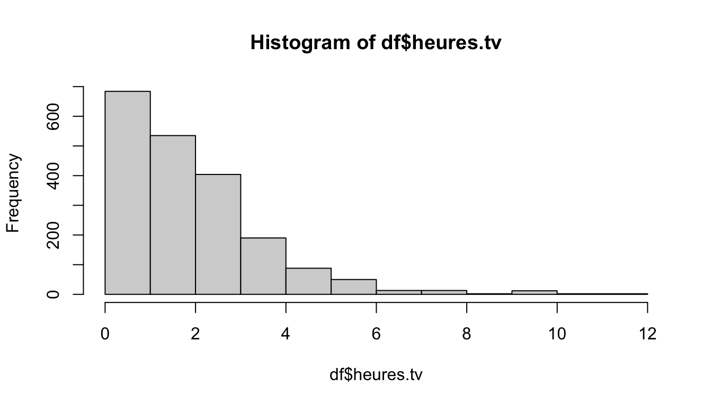
table(df$trav.imp)#>
#> Le plus important Aussi important que le reste
#> 29 259
#> Moins important que le reste Peu important
#> 708 52freq(df$trav.imp) # de nombreuses valeurs manquantes : les personnes sans emploi#> n % val%
#> Le plus important 29 1.5 2.8
#> Aussi important que le reste 259 13.0 24.7
#> Moins important que le reste 708 35.4 67.6
#> Peu important 52 2.6 5.0
#> NA 952 47.6 NAtab <- sort(table(df$trav.imp))
barplot(tab, col = "tomato")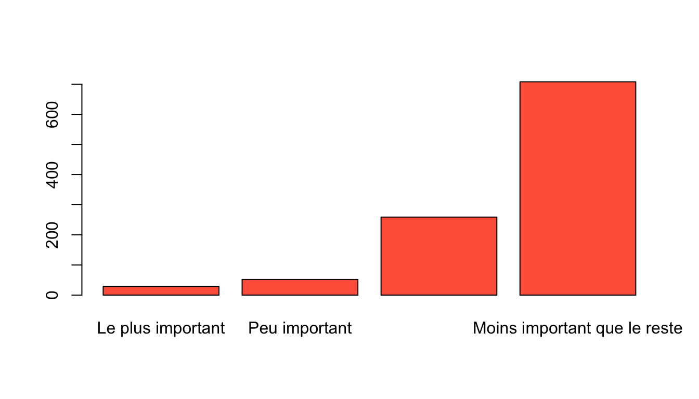
Exercice 3.2 — Analyse bivariée (hdv2003 et rp2018). Le jeu rp2018
(package questionr) contient des résultats du recensement de 2018 pour les
5 417 communes françaises de plus de 2 000 habitants : département, population,
part de cadres, d’ouvriers, de diplômés, de propriétaires, taux de chômage…
- Dans
hdv2003, faire le tableau croisé entre la catégorie socio-professionnelle (qualif) et le fait de croire ou non en l’existence des classes sociales (clso). Identifier la variable indépendante et la variable dépendante, calculer les pourcentages ligne ou colonne et interpréter. - Faire un test du \(\chi^2\). Peut-on rejeter l’hypothèse d’indépendance ?
Représenter le tableau par un
mosaicplotcoloré selon les résidus. - Faire la boîte à moustaches du nombre d’heures passées devant la télévision
(
heures.tv) selon le statut d’occupation (occup), puis calculer la durée moyenne par statut avectapply(). - Dans
rp2018, représenter le nuage de points croisant le pourcentage de personnes sans diplôme (dipl_aucun) et le pourcentage de propriétaires (proprio), et calculer le coefficient de corrélation linéaire.
Solution
tab <- table(hdv2003$qualif, hdv2003$clso)
lprop(tab) # qualif est la variable indépendante, en ligne#>
#> Oui Non Ne sait pas Total
#> Ouvrier specialise 37.4 59.1 3.4 100.0
#> Ouvrier qualifie 51.0 46.9 2.1 100.0
#> Technicien 46.5 53.5 0.0 100.0
#> Profession intermediaire 50.6 48.8 0.6 100.0
#> Cadre 56.9 42.7 0.4 100.0
#> Employe 46.6 52.4 1.0 100.0
#> Autre 32.8 67.2 0.0 100.0
#> All 47.8 50.9 1.3 100.0chisq.test(tab) # p-valeur très faible : on rejette l'indépendance#> Warning in chisq.test(tab): Chi-squared approximation may be incorrect#>
#> Pearson's Chi-squared test
#>
#> data: tab
#> X-squared = 37, df = 12, p-value = 2e-04mosaicplot(tab, shade = TRUE, las = 2, main = "")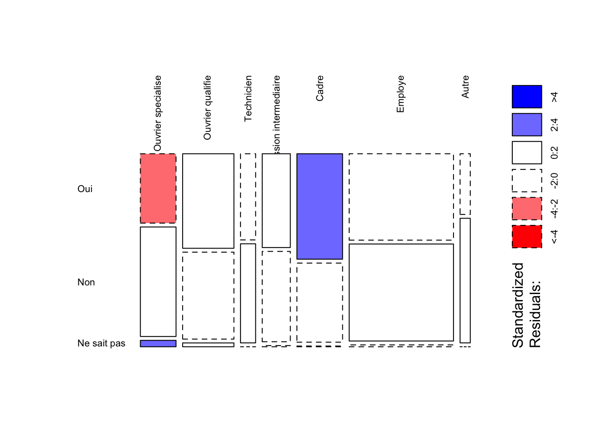
boxplot(heures.tv ~ occup, data = hdv2003, las = 2, xlab = "")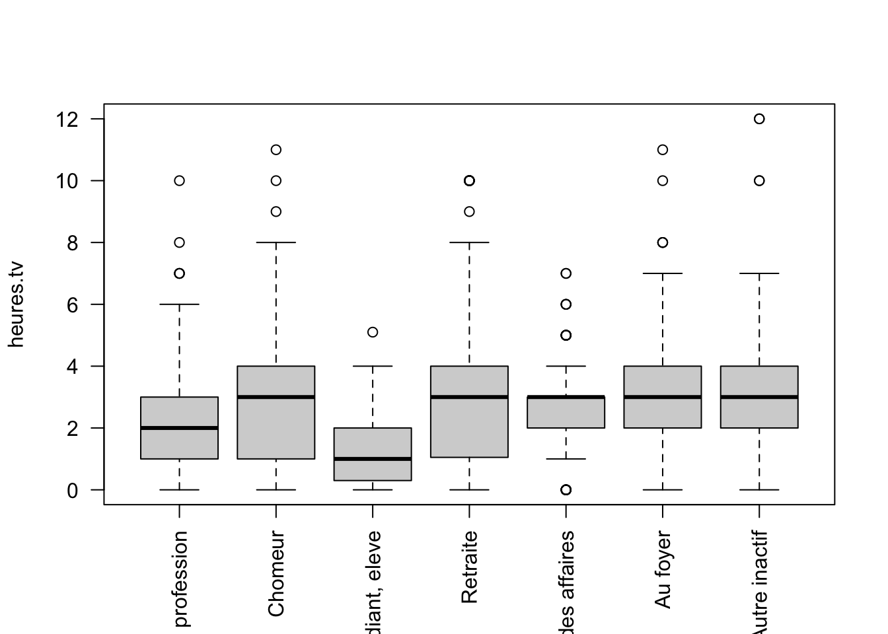
tapply(hdv2003$heures.tv, hdv2003$occup, mean, na.rm = TRUE)#> Exerce une profession Chomeur Etudiant, eleve
#> 1.822 2.875 1.330
#> Retraite Retire des affaires Au foyer
#> 2.850 2.625 2.822
#> Autre inactif
#> 3.265data(rp2018)
plot(rp2018$dipl_aucun, rp2018$proprio, pch = 16, cex = 0.4)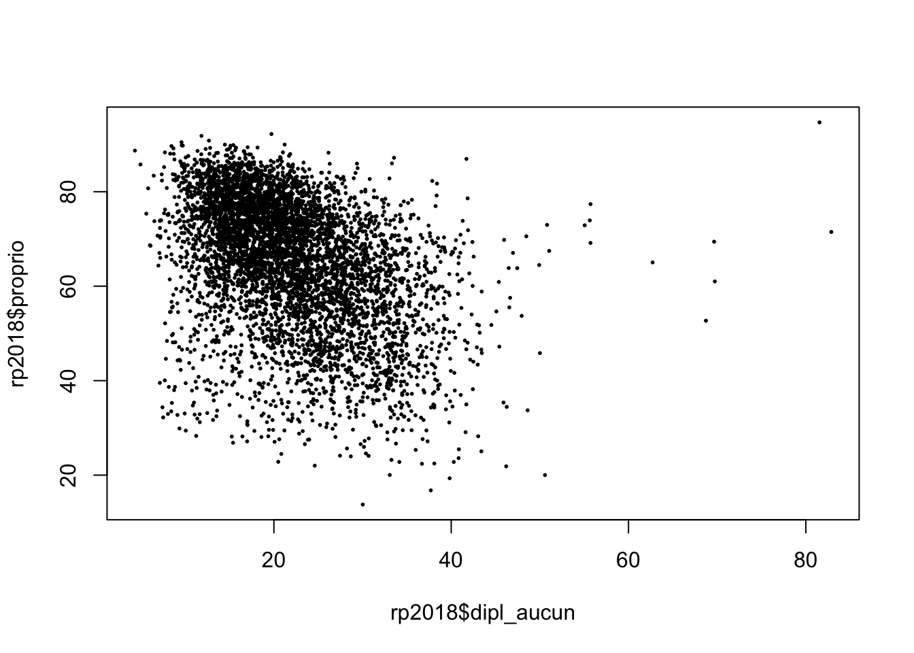
cor(rp2018$dipl_aucun, rp2018$proprio)#> [1] -0.4064La croyance en l’existence des classes sociales varie selon la catégorie socio-professionnelle ; la relation entre la part de non-diplômés et la part de propriétaires est faible et négative.
Les exercices 3.3 à 3.6 portent sur le jeu nycflights13 : les 336 776 vols
au départ des trois aéroports de New York en 2013, répartis en plusieurs
tables. flights décrit les vols (date, horaires, retards au départ
dep_delay et à l’arrivée arr_delay en minutes, compagnie carrier,
aéroports d’origine origin et de destination dest, durée de vol air_time,
distance distance en miles…) ; airports décrit les aéroports (code faa,
nom name, latitude lat, longitude lon, altitude alt en pieds, fuseau
horaire tz et tzone) ; airlines donne le nom complet de chaque compagnie
(carrier, name) ; planes décrit les avions (numéro de queue tailnum,
année de fabrication year, constructeur…).
Exercice 3.3 — Sélectionner, trier, créer des variables.
- Sélectionner la dixième ligne de la table
airports. - Sélectionner les 5 premières lignes de la table
airlines. - Sélectionner l’aéroport avec l’altitude la plus basse.
- Sélectionner les vols du mois de juillet.
- Sélectionner les vols avec un retard à l’arrivée compris entre 5 et 15 minutes.
- Sélectionner les vols des compagnies Delta, United et American (
DL,UA,AA). - Trier la table
flightspar retard au départ décroissant. - Sélectionner les colonnes
name,latetlonde la tableairports. - Sélectionner toutes les colonnes de la table
airportssauftzettzone. - Sélectionner toutes les colonnes de la table
flightsdont les noms se terminent par « delay ». - Dans la table
airports, renommer la colonnealtenaltitudeet la colonnetzoneenfuseau_horaire. - La colonne
altcontient l’altitude en pieds. Créer une variablealt_mcontenant l’altitude en mètres (on divise par 3,2808), puis ne garder que les colonnesaltetalt_m. - Réécrire le code de la question précédente avec le pipe
%>%ou|>. - Sélectionner les vols à destination de San Francisco (
SFO) et les trier par retard au départ décroissant. - Sélectionner les vols de septembre et d’octobre, conserver les colonnes
destetdep_delay, créer une variableretard_hcontenant le retard au départ en heures, et garder uniquement les 5 lignes avec les plus grands retards.
Solution
slice(airports, 10) # 1#> # A tibble: 1 × 8
#> faa name lat lon alt tz dst tzone
#> <chr> <chr> <dbl> <dbl> <dbl> <dbl> <chr> <chr>
#> 1 0S9 Jefferson County Intl 48.1 -123. 108 -8 A America/Los_Angelesslice(airlines, 1:5) # 2#> # A tibble: 5 × 2
#> carrier name
#> <chr> <chr>
#> 1 9E Endeavor Air Inc.
#> 2 AA American Airlines Inc.
#> 3 AS Alaska Airlines Inc.
#> 4 B6 JetBlue Airways
#> 5 DL Delta Air Lines Inc.slice_min(airports, alt, n = 1) # 3#> # A tibble: 1 × 8
#> faa name lat lon alt tz dst tzone
#> <chr> <chr> <dbl> <dbl> <dbl> <dbl> <chr> <chr>
#> 1 IPL Imperial Co 32.8 -116. -54 -8 A America/Los_Angelesfilter(flights, month == 7) # 4#> # A tibble: 29,425 × 19
#> year month day dep_time sched_dep_time dep_delay arr_time sched_arr_time
#> <int> <int> <int> <int> <int> <dbl> <int> <int>
#> 1 2013 7 1 1 2029 212 236 2359
#> 2 2013 7 1 2 2359 3 344 344
#> 3 2013 7 1 29 2245 104 151 1
#> 4 2013 7 1 43 2130 193 322 14
#> 5 2013 7 1 44 2150 174 300 100
#> 6 2013 7 1 46 2051 235 304 2358
#> 7 2013 7 1 48 2001 287 308 2305
#> 8 2013 7 1 58 2155 183 335 43
#> 9 2013 7 1 100 2146 194 327 30
#> 10 2013 7 1 100 2245 135 337 135
#> # ℹ 29,415 more rows
#> # ℹ 11 more variables: arr_delay <dbl>, carrier <chr>, flight <int>,
#> # tailnum <chr>, origin <chr>, dest <chr>, air_time <dbl>, distance <dbl>,
#> # hour <dbl>, minute <dbl>, time_hour <dttm>filter(flights, arr_delay >= 5, arr_delay <= 15) # 5#> # A tibble: 36,392 × 19
#> year month day dep_time sched_dep_time dep_delay arr_time sched_arr_time
#> <int> <int> <int> <int> <int> <dbl> <int> <int>
#> 1 2013 1 1 517 515 2 830 819
#> 2 2013 1 1 554 558 -4 740 728
#> 3 2013 1 1 558 600 -2 753 745
#> 4 2013 1 1 558 600 -2 924 917
#> 5 2013 1 1 600 600 0 837 825
#> 6 2013 1 1 611 600 11 945 931
#> 7 2013 1 1 623 610 13 920 915
#> 8 2013 1 1 624 630 -6 840 830
#> 9 2013 1 1 629 630 -1 824 810
#> 10 2013 1 1 632 608 24 740 728
#> # ℹ 36,382 more rows
#> # ℹ 11 more variables: arr_delay <dbl>, carrier <chr>, flight <int>,
#> # tailnum <chr>, origin <chr>, dest <chr>, air_time <dbl>, distance <dbl>,
#> # hour <dbl>, minute <dbl>, time_hour <dttm>filter(flights, carrier %in% c("DL", "UA", "AA")) # 6#> # A tibble: 139,504 × 19
#> year month day dep_time sched_dep_time dep_delay arr_time sched_arr_time
#> <int> <int> <int> <int> <int> <dbl> <int> <int>
#> 1 2013 1 1 517 515 2 830 819
#> 2 2013 1 1 533 529 4 850 830
#> 3 2013 1 1 542 540 2 923 850
#> 4 2013 1 1 554 600 -6 812 837
#> 5 2013 1 1 554 558 -4 740 728
#> 6 2013 1 1 558 600 -2 753 745
#> 7 2013 1 1 558 600 -2 924 917
#> 8 2013 1 1 558 600 -2 923 937
#> 9 2013 1 1 559 600 -1 941 910
#> 10 2013 1 1 559 600 -1 854 902
#> # ℹ 139,494 more rows
#> # ℹ 11 more variables: arr_delay <dbl>, carrier <chr>, flight <int>,
#> # tailnum <chr>, origin <chr>, dest <chr>, air_time <dbl>, distance <dbl>,
#> # hour <dbl>, minute <dbl>, time_hour <dttm>arrange(flights, desc(dep_delay)) # 7#> # A tibble: 336,776 × 19
#> year month day dep_time sched_dep_time dep_delay arr_time sched_arr_time
#> <int> <int> <int> <int> <int> <dbl> <int> <int>
#> 1 2013 1 9 641 900 1301 1242 1530
#> 2 2013 6 15 1432 1935 1137 1607 2120
#> 3 2013 1 10 1121 1635 1126 1239 1810
#> 4 2013 9 20 1139 1845 1014 1457 2210
#> 5 2013 7 22 845 1600 1005 1044 1815
#> 6 2013 4 10 1100 1900 960 1342 2211
#> 7 2013 3 17 2321 810 911 135 1020
#> 8 2013 6 27 959 1900 899 1236 2226
#> 9 2013 7 22 2257 759 898 121 1026
#> 10 2013 12 5 756 1700 896 1058 2020
#> # ℹ 336,766 more rows
#> # ℹ 11 more variables: arr_delay <dbl>, carrier <chr>, flight <int>,
#> # tailnum <chr>, origin <chr>, dest <chr>, air_time <dbl>, distance <dbl>,
#> # hour <dbl>, minute <dbl>, time_hour <dttm>select(airports, name, lat, lon) # 8#> # A tibble: 1,458 × 3
#> name lat lon
#> <chr> <dbl> <dbl>
#> 1 Lansdowne Airport 41.1 -80.6
#> 2 Moton Field Municipal Airport 32.5 -85.7
#> 3 Schaumburg Regional 42.0 -88.1
#> 4 Randall Airport 41.4 -74.4
#> 5 Jekyll Island Airport 31.1 -81.4
#> 6 Elizabethton Municipal Airport 36.4 -82.2
#> 7 Williams County Airport 41.5 -84.5
#> 8 Finger Lakes Regional Airport 42.9 -76.8
#> 9 Shoestring Aviation Airfield 39.8 -76.6
#> 10 Jefferson County Intl 48.1 -123.
#> # ℹ 1,448 more rowsselect(airports, -tz, -tzone) # 9#> # A tibble: 1,458 × 6
#> faa name lat lon alt dst
#> <chr> <chr> <dbl> <dbl> <dbl> <chr>
#> 1 04G Lansdowne Airport 41.1 -80.6 1044 A
#> 2 06A Moton Field Municipal Airport 32.5 -85.7 264 A
#> 3 06C Schaumburg Regional 42.0 -88.1 801 A
#> 4 06N Randall Airport 41.4 -74.4 523 A
#> 5 09J Jekyll Island Airport 31.1 -81.4 11 A
#> 6 0A9 Elizabethton Municipal Airport 36.4 -82.2 1593 A
#> 7 0G6 Williams County Airport 41.5 -84.5 730 A
#> 8 0G7 Finger Lakes Regional Airport 42.9 -76.8 492 A
#> 9 0P2 Shoestring Aviation Airfield 39.8 -76.6 1000 U
#> 10 0S9 Jefferson County Intl 48.1 -123. 108 A
#> # ℹ 1,448 more rowsselect(flights, ends_with("delay")) # 10#> # A tibble: 336,776 × 2
#> dep_delay arr_delay
#> <dbl> <dbl>
#> 1 2 11
#> 2 4 20
#> 3 2 33
#> 4 -1 -18
#> 5 -6 -25
#> 6 -4 12
#> 7 -5 19
#> 8 -3 -14
#> 9 -3 -8
#> 10 -2 8
#> # ℹ 336,766 more rowsrename(airports, altitude = alt, fuseau_horaire = tzone) # 11#> # A tibble: 1,458 × 8
#> faa name lat lon altitude tz dst fuseau_horaire
#> <chr> <chr> <dbl> <dbl> <dbl> <dbl> <chr> <chr>
#> 1 04G Lansdowne Airport 41.1 -80.6 1044 -5 A America/New_Y…
#> 2 06A Moton Field Municipal… 32.5 -85.7 264 -6 A America/Chica…
#> 3 06C Schaumburg Regional 42.0 -88.1 801 -6 A America/Chica…
#> 4 06N Randall Airport 41.4 -74.4 523 -5 A America/New_Y…
#> 5 09J Jekyll Island Airport 31.1 -81.4 11 -5 A America/New_Y…
#> 6 0A9 Elizabethton Municipa… 36.4 -82.2 1593 -5 A America/New_Y…
#> 7 0G6 Williams County Airpo… 41.5 -84.5 730 -5 A America/New_Y…
#> 8 0G7 Finger Lakes Regional… 42.9 -76.8 492 -5 A America/New_Y…
#> 9 0P2 Shoestring Aviation A… 39.8 -76.6 1000 -5 U America/New_Y…
#> 10 0S9 Jefferson County Intl 48.1 -123. 108 -8 A America/Los_A…
#> # ℹ 1,448 more rowsselect(mutate(airports, alt_m = alt / 3.2808), alt, alt_m) # 12#> # A tibble: 1,458 × 2
#> alt alt_m
#> <dbl> <dbl>
#> 1 1044 318.
#> 2 264 80.5
#> 3 801 244.
#> 4 523 159.
#> 5 11 3.35
#> 6 1593 486.
#> 7 730 223.
#> 8 492 150.
#> 9 1000 305.
#> 10 108 32.9
#> # ℹ 1,448 more rowsairports |> # 13
mutate(alt_m = alt / 3.2808) |>
select(alt, alt_m)#> # A tibble: 1,458 × 2
#> alt alt_m
#> <dbl> <dbl>
#> 1 1044 318.
#> 2 264 80.5
#> 3 801 244.
#> 4 523 159.
#> 5 11 3.35
#> 6 1593 486.
#> 7 730 223.
#> 8 492 150.
#> 9 1000 305.
#> 10 108 32.9
#> # ℹ 1,448 more rowsflights |> # 14
filter(dest == "SFO") |>
arrange(desc(dep_delay))#> # A tibble: 13,331 × 19
#> year month day dep_time sched_dep_time dep_delay arr_time sched_arr_time
#> <int> <int> <int> <int> <int> <dbl> <int> <int>
#> 1 2013 9 20 1139 1845 1014 1457 2210
#> 2 2013 7 7 2123 1030 653 17 1345
#> 3 2013 7 7 2059 1030 629 106 1350
#> 4 2013 7 6 149 1600 589 456 1935
#> 5 2013 7 10 133 1800 453 455 2130
#> 6 2013 7 10 2342 1630 432 312 1959
#> 7 2013 7 7 2204 1525 399 107 1823
#> 8 2013 7 7 2306 1630 396 250 1959
#> 9 2013 6 23 1833 1200 393 NA 1507
#> 10 2013 7 10 2232 1609 383 138 1928
#> # ℹ 13,321 more rows
#> # ℹ 11 more variables: arr_delay <dbl>, carrier <chr>, flight <int>,
#> # tailnum <chr>, origin <chr>, dest <chr>, air_time <dbl>, distance <dbl>,
#> # hour <dbl>, minute <dbl>, time_hour <dttm>flights |> # 15
filter(month %in% c(9, 10)) |>
select(dest, dep_delay) |>
mutate(retard_h = dep_delay / 60) |>
slice_max(dep_delay, n = 5)#> # A tibble: 5 × 3
#> dest dep_delay retard_h
#> <chr> <dbl> <dbl>
#> 1 SFO 1014 16.9
#> 2 ATL 702 11.7
#> 3 DTW 696 11.6
#> 4 ATL 602 10.0
#> 5 MSP 593 9.88Exercice 3.4 — Opérations groupées.
- Afficher le nombre de vols par mois.
- Trier la table obtenue selon le nombre de vols croissant.
- Calculer la distance moyenne des vols selon l’aéroport de départ.
- Calculer le nombre de vols à destination de Los Angeles (
LAX) pour chaque mois de l’année. - Calculer le nombre de vols selon le mois et la destination.
- Pour chaque mois, ne garder que la destination avec le nombre maximal de vols.
- Calculer la part (en %) des vols annuels réalisée chaque mois.
- Pour chaque aéroport de départ, trouver la destination dont la durée moyenne de vol est la plus longue.
Solution
flights |> count(month) # 16#> # A tibble: 12 × 2
#> month n
#> <int> <int>
#> 1 1 27004
#> 2 2 24951
#> 3 3 28834
#> 4 4 28330
#> 5 5 28796
#> 6 6 28243
#> 7 7 29425
#> 8 8 29327
#> 9 9 27574
#> 10 10 28889
#> 11 11 27268
#> 12 12 28135flights |> count(month) |> arrange(n) # 17#> # A tibble: 12 × 2
#> month n
#> <int> <int>
#> 1 2 24951
#> 2 1 27004
#> 3 11 27268
#> 4 9 27574
#> 5 12 28135
#> 6 6 28243
#> 7 4 28330
#> 8 5 28796
#> 9 3 28834
#> 10 10 28889
#> 11 8 29327
#> 12 7 29425flights |> # 18
group_by(origin) |>
summarise(distance_moyenne = mean(distance))#> # A tibble: 3 × 2
#> origin distance_moyenne
#> <chr> <dbl>
#> 1 EWR 1057.
#> 2 JFK 1266.
#> 3 LGA 780.flights |> filter(dest == "LAX") |> count(month) # 19#> # A tibble: 12 × 2
#> month n
#> <int> <int>
#> 1 1 1159
#> 2 2 1030
#> 3 3 1178
#> 4 4 1382
#> 5 5 1453
#> 6 6 1430
#> 7 7 1500
#> 8 8 1505
#> 9 9 1384
#> 10 10 1409
#> 11 11 1336
#> 12 12 1408flights |> count(month, dest) # 20#> # A tibble: 1,113 × 3
#> month dest n
#> <int> <chr> <int>
#> 1 1 ALB 64
#> 2 1 ATL 1396
#> 3 1 AUS 169
#> 4 1 AVL 2
#> 5 1 BDL 37
#> 6 1 BHM 25
#> 7 1 BNA 399
#> 8 1 BOS 1245
#> 9 1 BQN 93
#> 10 1 BTV 223
#> # ℹ 1,103 more rowsflights |> # 21
count(month, dest) |>
group_by(month) |>
slice_max(n, n = 1) |>
ungroup()#> # A tibble: 12 × 3
#> month dest n
#> <int> <chr> <int>
#> 1 1 ATL 1396
#> 2 2 ATL 1267
#> 3 3 ATL 1448
#> 4 4 ATL 1490
#> 5 5 ORD 1582
#> 6 6 ORD 1547
#> 7 7 ORD 1573
#> 8 8 ORD 1604
#> 9 9 ORD 1582
#> 10 10 ORD 1604
#> 11 11 ATL 1384
#> 12 12 ATL 1463flights |> # 22
count(month) |>
mutate(part = round(100 * n / sum(n), 1))#> # A tibble: 12 × 3
#> month n part
#> <int> <int> <dbl>
#> 1 1 27004 8
#> 2 2 24951 7.4
#> 3 3 28834 8.6
#> 4 4 28330 8.4
#> 5 5 28796 8.6
#> 6 6 28243 8.4
#> 7 7 29425 8.7
#> 8 8 29327 8.7
#> 9 9 27574 8.2
#> 10 10 28889 8.6
#> 11 11 27268 8.1
#> 12 12 28135 8.4flights |> # 23
group_by(origin, dest) |>
summarise(duree_moyenne = mean(air_time, na.rm = TRUE), .groups = "drop") |>
group_by(origin) |>
slice_max(duree_moyenne, n = 1) |>
ungroup()#> # A tibble: 3 × 3
#> origin dest duree_moyenne
#> <chr> <chr> <dbl>
#> 1 EWR HNL 612.
#> 2 JFK HNL 623.
#> 3 LGA DEN 228.Exercice 3.5 — Jointures.
- Faire la jointure de la table
airlinessur la tableflightsà l’aide deleft_join(). - Calculer le retard moyen au départ pour chaque compagnie (avec son nom complet) et trier.
- Faire la jointure de la table
airportssur la tableflightsen utilisant comme clé le code de l’aéroport de destination. - Pour chaque mois, afficher le nom de l’aéroport de destination ayant eu le plus petit nombre de vols.
- Créer une table contenant uniquement les noms de l’aéroport de départ et de l’aéroport d’arrivée de chaque vol.
- Calculer le nombre de vols selon l’aéroport de destination, puis fusionner
avec
airportsvialeft_join(). Stocker le résultat dansflights_dest.
Solution
left_join(flights, airlines, by = "carrier") # 24#> # A tibble: 336,776 × 20
#> year month day dep_time sched_dep_time dep_delay arr_time sched_arr_time
#> <int> <int> <int> <int> <int> <dbl> <int> <int>
#> 1 2013 1 1 517 515 2 830 819
#> 2 2013 1 1 533 529 4 850 830
#> 3 2013 1 1 542 540 2 923 850
#> 4 2013 1 1 544 545 -1 1004 1022
#> 5 2013 1 1 554 600 -6 812 837
#> 6 2013 1 1 554 558 -4 740 728
#> 7 2013 1 1 555 600 -5 913 854
#> 8 2013 1 1 557 600 -3 709 723
#> 9 2013 1 1 557 600 -3 838 846
#> 10 2013 1 1 558 600 -2 753 745
#> # ℹ 336,766 more rows
#> # ℹ 12 more variables: arr_delay <dbl>, carrier <chr>, flight <int>,
#> # tailnum <chr>, origin <chr>, dest <chr>, air_time <dbl>, distance <dbl>,
#> # hour <dbl>, minute <dbl>, time_hour <dttm>, name <chr>flights |> # 25
group_by(carrier) |>
summarise(retard_moyen = mean(dep_delay, na.rm = TRUE)) |>
left_join(airlines, by = "carrier") |>
arrange(desc(retard_moyen))#> # A tibble: 16 × 3
#> carrier retard_moyen name
#> <chr> <dbl> <chr>
#> 1 F9 20.2 Frontier Airlines Inc.
#> 2 EV 20.0 ExpressJet Airlines Inc.
#> 3 YV 19.0 Mesa Airlines Inc.
#> 4 FL 18.7 AirTran Airways Corporation
#> 5 WN 17.7 Southwest Airlines Co.
#> 6 9E 16.7 Endeavor Air Inc.
#> 7 B6 13.0 JetBlue Airways
#> 8 VX 12.9 Virgin America
#> 9 OO 12.6 SkyWest Airlines Inc.
#> 10 UA 12.1 United Air Lines Inc.
#> 11 MQ 10.6 Envoy Air
#> 12 DL 9.26 Delta Air Lines Inc.
#> 13 AA 8.59 American Airlines Inc.
#> 14 AS 5.80 Alaska Airlines Inc.
#> 15 HA 4.90 Hawaiian Airlines Inc.
#> 16 US 3.78 US Airways Inc.left_join(flights, airports, by = c("dest" = "faa")) # 26#> # A tibble: 336,776 × 26
#> year month day dep_time sched_dep_time dep_delay arr_time sched_arr_time
#> <int> <int> <int> <int> <int> <dbl> <int> <int>
#> 1 2013 1 1 517 515 2 830 819
#> 2 2013 1 1 533 529 4 850 830
#> 3 2013 1 1 542 540 2 923 850
#> 4 2013 1 1 544 545 -1 1004 1022
#> 5 2013 1 1 554 600 -6 812 837
#> 6 2013 1 1 554 558 -4 740 728
#> 7 2013 1 1 555 600 -5 913 854
#> 8 2013 1 1 557 600 -3 709 723
#> 9 2013 1 1 557 600 -3 838 846
#> 10 2013 1 1 558 600 -2 753 745
#> # ℹ 336,766 more rows
#> # ℹ 18 more variables: arr_delay <dbl>, carrier <chr>, flight <int>,
#> # tailnum <chr>, origin <chr>, dest <chr>, air_time <dbl>, distance <dbl>,
#> # hour <dbl>, minute <dbl>, time_hour <dttm>, name <chr>, lat <dbl>,
#> # lon <dbl>, alt <dbl>, tz <dbl>, dst <chr>, tzone <chr>flights |> # 27
count(month, dest) |>
group_by(month) |>
slice_min(n, n = 1) |>
ungroup() |>
left_join(airports, by = c("dest" = "faa")) |>
select(month, dest, name, n)#> # A tibble: 14 × 4
#> month dest name n
#> <int> <chr> <chr> <int>
#> 1 1 EYW Key West Intl 1
#> 2 2 JAC Jackson Hole Airport 3
#> 3 3 BGR Bangor Intl 2
#> 4 4 EYW Key West Intl 1
#> 5 4 MYR Myrtle Beach Intl 1
#> 6 5 CAE Columbia Metropolitan 9
#> 7 6 MYR Myrtle Beach Intl 1
#> 8 7 LGA La Guardia 1
#> 9 8 SBN South Bend Rgnl 1
#> 10 9 SBN South Bend Rgnl 5
#> 11 10 ALB Albany Intl 1
#> 12 10 SBN South Bend Rgnl 1
#> 13 11 LEX Blue Grass 1
#> 14 12 SBN South Bend Rgnl 1noms <- select(airports, faa, name) # 28
flights |>
left_join(noms, by = c("origin" = "faa")) |>
left_join(noms, by = c("dest" = "faa"), suffix = c("_depart", "_arrivee")) |>
select(name_depart, name_arrivee)#> # A tibble: 336,776 × 2
#> name_depart name_arrivee
#> <chr> <chr>
#> 1 Newark Liberty Intl George Bush Intercontinental
#> 2 La Guardia George Bush Intercontinental
#> 3 John F Kennedy Intl Miami Intl
#> 4 John F Kennedy Intl <NA>
#> 5 La Guardia Hartsfield Jackson Atlanta Intl
#> 6 Newark Liberty Intl Chicago Ohare Intl
#> 7 Newark Liberty Intl Fort Lauderdale Hollywood Intl
#> 8 La Guardia Washington Dulles Intl
#> 9 John F Kennedy Intl Orlando Intl
#> 10 La Guardia Chicago Ohare Intl
#> # ℹ 336,766 more rowsflights_dest <- flights |> # 29
count(dest) |>
left_join(airports, by = c("dest" = "faa"))
head(flights_dest)#> # A tibble: 6 × 9
#> dest n name lat lon alt tz dst tzone
#> <chr> <int> <chr> <dbl> <dbl> <dbl> <dbl> <chr> <chr>
#> 1 ABQ 254 Albuquerque International Su… 35.0 -107. 5355 -7 A Amer…
#> 2 ACK 265 Nantucket Mem 41.3 -70.1 48 -5 A Amer…
#> 3 ALB 439 Albany Intl 42.7 -73.8 285 -5 A Amer…
#> 4 ANC 8 Ted Stevens Anchorage Intl 61.2 -150. 152 -9 A Amer…
#> 5 ATL 17215 Hartsfield Jackson Atlanta I… 33.6 -84.4 1026 -5 A Amer…
#> 6 AUS 2439 Austin Bergstrom Intl 30.2 -97.7 542 -6 A Amer…Aux questions 27 et 29, certaines destinations (aéroports de Porto Rico et des
îles Vierges, par exemple) sont absentes de la table airports : leur nom vaut
NA.
Exercice 3.6 — Les avions. À l’aide des tables flights et planes :
- Sélectionner uniquement les vols dont le numéro de queue de l’avion
(
tailnum) est renseigné. - Calculer le nombre d’avions distincts dans la table
flights. - Calculer le nombre d’avions de la table
planesdont l’année de fabrication (year) est renseignée.
Solution
flights |> filter(!is.na(tailnum)) |> select(tailnum)#> # A tibble: 334,264 × 1
#> tailnum
#> <chr>
#> 1 N14228
#> 2 N24211
#> 3 N619AA
#> 4 N804JB
#> 5 N668DN
#> 6 N39463
#> 7 N516JB
#> 8 N829AS
#> 9 N593JB
#> 10 N3ALAA
#> # ℹ 334,254 more rowsflights |> summarise(nb_avions = n_distinct(tailnum))#> # A tibble: 1 × 1
#> nb_avions
#> <int>
#> 1 4044planes |> summarise(annee_renseignee = sum(!is.na(year)))#> # A tibble: 1 × 1
#> annee_renseignee
#> <int>
#> 1 3252Exercice 3.7 — Analyse des ventes de la boutique. À partir des tables
commandes, clients et categories :
- Calculer le chiffre d’affaires et le nombre de commandes par mois. Quel est le mois le plus fort ? Pourquoi, à votre avis ?
- Calculer le panier moyen par canal d’acquisition du client (il faut une jointure).
- Pour chaque région, calculer le nombre de clients actifs, le chiffre d’affaires et le chiffre d’affaires par client actif. Trier par ce dernier.
- Quelle part des commandes du week-end (samedi, dimanche) utilise un code promo, comparée à la semaine ?
Solution
# 1.
commandes |>
group_by(mois) |>
summarise(ca = sum(montant), nb = n()) |>
arrange(desc(ca)) |>
head(3)#> # A tibble: 3 × 3
#> mois ca nb
#> <dbl> <dbl> <int>
#> 1 12 99169. 1512
#> 2 11 79009. 1221
#> 3 10 53304. 845# Décembre puis novembre : achats de Noël et Black Friday.
# 2.
commandes |>
left_join(clients, by = "client_id") |>
group_by(canal_acquisition) |>
summarise(panier_moyen = mean(montant), nb_commandes = n()) |>
arrange(desc(panier_moyen))#> # A tibble: 5 × 3
#> canal_acquisition panier_moyen nb_commandes
#> <chr> <dbl> <int>
#> 1 Direct 83.2 1855
#> 2 Email 78.0 1689
#> 3 Moteur de recherche 63.0 2192
#> 4 Réseaux sociaux 52.8 2562
#> 5 Affiliation 44.8 1210# 3.
commandes |>
left_join(clients, by = "client_id") |>
group_by(region) |>
summarise(clients_actifs = n_distinct(client_id),
ca = sum(montant)) |>
mutate(ca_par_client = ca / clients_actifs) |>
arrange(desc(ca_par_client))#> # A tibble: 8 × 4
#> region clients_actifs ca ca_par_client
#> <chr> <int> <dbl> <dbl>
#> 1 Auvergne-Rhône-Alpes 214 79200. 370.
#> 2 Hauts-de-France 166 61348. 370.
#> 3 Autres régions 323 114934. 356.
#> 4 Nouvelle-Aquitaine 160 56885. 356.
#> 5 Provence-Alpes-Côte d'Azur 159 55401. 348.
#> 6 Occitanie 127 44057. 347.
#> 7 Île-de-France 450 155115. 345.
#> 8 Grand Est 142 46823. 330.# 4.
commandes |>
mutate(week_end = wday(date, week_start = 1) >= 6) |> # 6 = samedi, 7 = dimanche
group_by(week_end) |>
summarise(part_promo = mean(promo))#> # A tibble: 2 × 2
#> week_end part_promo
#> <lgl> <dbl>
#> 1 FALSE 0.405
#> 2 TRUE 0.398Exercice 3.8 — Test A/B. À partir de la table campagne :
- Calculer, pour chaque version, le taux d’ouverture, le taux de clic et le taux d’achat.
- Parmi les emails ouverts, le taux de clic diffère-t-il entre A et B ? Faire le test approprié.
- Rédiger en trois phrases une recommandation pour l’équipe marketing.
Solution
campagne |>
group_by(version) |>
summarise(n = n(), ouverture = mean(ouvert), clic = mean(clic), achat = mean(achat))#> # A tibble: 2 × 5
#> version n ouverture clic achat
#> <chr> <int> <dbl> <dbl> <dbl>
#> 1 A 465 0.204 0.0473 0.0151
#> 2 B 479 0.276 0.0626 0.0271ouverts <- filter(campagne, ouvert)
lprop(table(ouverts$version, ouverts$clic))#>
#> FALSE TRUE Total
#> A 76.8 23.2 100.0
#> B 77.3 22.7 100.0
#> All 77.1 22.9 100.0chisq.test(table(ouverts$version, ouverts$clic))#>
#> Pearson's Chi-squared test with Yates' continuity correction
#>
#> data: table(ouverts$version, ouverts$clic)
#> X-squared = 3e-31, df = 1, p-value = 1L’objet personnalisé (B) augmente significativement le taux d’ouverture. Une fois l’email ouvert, le taux de clic est comparable entre les deux versions : l’effet de B porte sur l’objet, pas sur le contenu. L’effet sur les achats va dans le même sens mais n’est pas démontré avec cet échantillon ; on peut généraliser l’objet personnalisé et continuer à mesurer l’effet sur les ventes sur plusieurs campagnes.
Exercice 3.9 — Clients à réactiver. Construire la table des clients dont la dernière commande date de plus de 180 jours au 1er janvier 2026, avec leur canal d’acquisition et leur statut newsletter. Combien peuvent être contactés par email ? Exporter cette table en CSV.
Solution
a_reactiver <- rfm |>
filter(recence > 180) |>
left_join(clients, by = "client_id") |>
select(client_id, recence, frequence, montant_total, canal_acquisition, newsletter)
nrow(a_reactiver)#> [1] 236count(a_reactiver, newsletter)#> # A tibble: 2 × 2
#> newsletter n
#> <chr> <int>
#> 1 Non 166
#> 2 Oui 70# write_csv(a_reactiver, "clients_a_reactiver.csv")Pour aller plus loin
- J. Barnier, Introduction à R et au tidyverse, chapitres « Analyse univariée », « Analyse bivariée », « Manipuler les données avec dplyr » (juba.github.io/tidyverse).
- H. Wickham et al., R for Data Science, 2e éd., chapitres « Data transformation », « Data tidying », « Joins ».